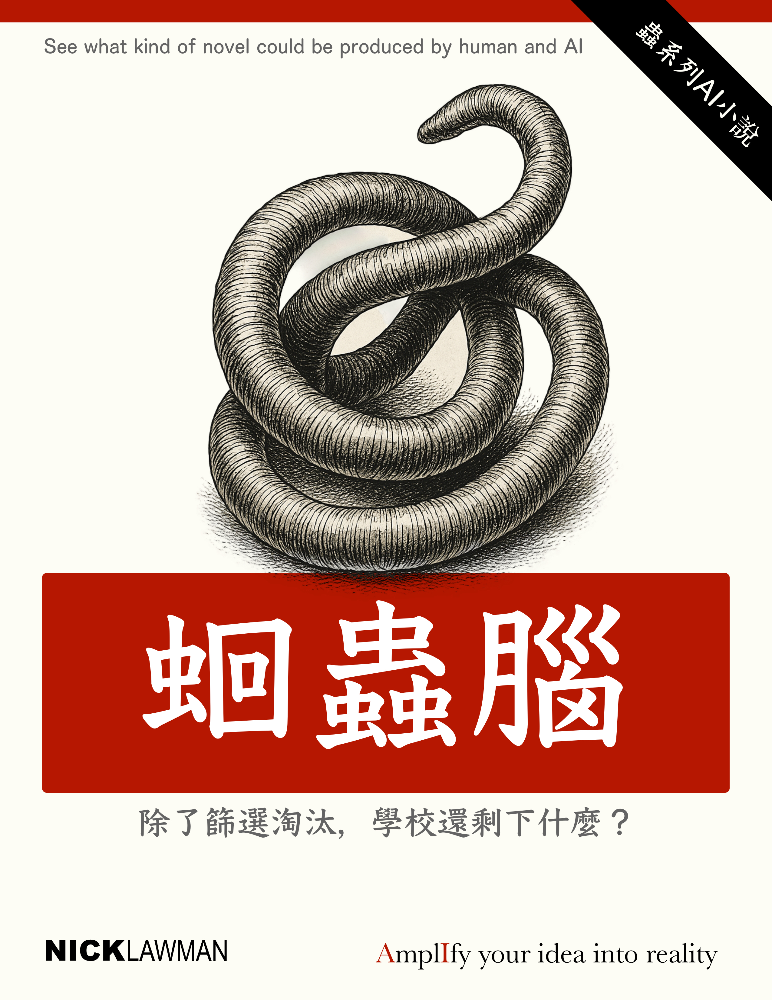

前言
在我完成上一部小說之後，一位老同學在LINE上傳了一段信息給我： 「人類發明了輪子之後，還是會走路…… 但發明並使用 AI 之後，有些能力退化了，可是又覺得自己比以前厲害。 那麼，最後的結果會是什麼呢？ 你下一篇小說就來探討這個吧」
人類創造工具的歷史，其實就是一場「讓自己更方便」與「讓自己變脆弱」的拔河。 輪子、印刷術、電腦、網路、再到人工智慧，每一次進步都讓我們能做得更多，也在不知不覺中，交出了某一部分的自主。 AI 出現後，我們開始質疑什麼是「人類的智慧」。 當機器能寫詩、畫畫、思考策略、甚至模仿情感，我們的「思考」還剩下什麼？
這本小說《第二個腦》便從這個問題出發。 它不是關於科技的冷酷未來，而是關於人—— 那些在被取代與被強化之間掙扎的靈魂。 當智慧變成可以移植的器官，當「思考」不再只屬於腦，而延伸到另一個、被稱作「大腸」的地方， 人類究竟會更接近神，還是更像一種寄生生物？
我寫這個故事，不是為了給出答案。 而是希望在所有讀者心中留下一個問題： 當人類把「思考」交給機器的那一刻，我們真正想留下的是什麼？
—— Nick Lawman
第一章：考場中的閃光
第一節
清晨六點四十七分。
沈洛言站在考場大樓前，看著玻璃幕牆上反射的自己——一個瘦削的十七歲少年，校服洗得發白，眼神裡有種不屬於這個年紀的疲憊。或者說，曾經有過。
今天不一樣。
他摸了摸右耳，那裡有種細微的震顫，像蝴蝶翅膀掠過皮膚。三個月前開始的，從那次「營養調理」之後。父親說是新型的益智配方，進口的，很貴。母親在旁邊塗指甲油，漫不經心地說："別浪費你爸的心血啊，洛言。"
考場入口處，家長們擠成黑壓壓的人牆。有人在燒香，有人在直播，更多人只是沉默地盯著孩子的背影，眼神像要把什麼東西釘進他們的脊椎。
"加權智商測驗，決定你下半生的牌桌。"電子廣告牌上滾動著這行字，下面是更小的說明：本考試已接入GPT-7審核系統，任何作弊行為將被永久記錄於公民信用檔案。
隊伍緩緩前移。洛言前面的女生在小聲背誦量子力學公式，聲音顫抖。後面的男生在吃藥，白色藥片，一把一把地往嘴裡塞。空氣裡瀰漫著紅牛、咖啡和恐懼混合的味道。
輪到他了。
安檢門發出幽藍色的光，像深海裡某種發光生物。他站定，雙手張開，任由掃描波從頭頂流過。一秒、兩秒、三秒——
他的腸胃深處傳來一陣異樣的蠕動，不是疼，是某種……呼應。像有什麼東西在他體內醒來，伸了個懶腰。
"未檢測到電子植入設備。"機械女聲響起，"請進入考場。"
他鬆了口氣，卻又莫名覺得好笑。他們在找電子設備，卻不知道真正的"外掛"可能根本不需要電。
考場是個巨大的透明立方體矩陣，每個考生都被封在玻璃格子裡，像實驗室的小白鼠。監考官在天花板的軌道上緩緩滑行，紅外攝像頭三百六十度無死角。據說去年有個考生試圖用摩斯密碼眨眼傳訊息，三分鐘就被抓了，當場取消成績，全網公示。
洛言坐下，面前的全息屏幕亮起。
"2068年全國青少年智能評級考試" "考生：沈洛言" "開始時間：07:00:00"
第一題出現了。
那一瞬間，他愣住了。不是因為題目難——恰恰相反，是因為他突然"看見"了答案。不是想出來的，是看見的，就像答案一直寫在那裡，只是現在才顯形。
他的手指開始在虛擬鍵盤上飛舞，速度快得連自己都驚訝。更詭異的是，他能聽見自己的思考聲——不，不只是自己的，還有別的聲音，用不同的語言、不同的節奏，在他腦海深處竊竊私語。
德語、日語、還有一種他認不出的古老語言。
"專注。"其中一個聲音說，"讓我們開始吧。"
第二節
題目在屏幕上展開，像一朵有毒的花。
"給定一個包含10^7個節點的動態圖，設計算法在O(log n)時間內完成社群發現與信息熵最小化。證明你的解法。"
三個月前的沈洛言會直接放棄這題。他連什麼是信息熵都不知道，更別說社群發現了。但現在，他的腦子裡突然亮起一張圖——不，是無數張圖在疊加、旋轉、重組。節點像星星，邊像引力線，整個網絡在他意識裡呼吸。
他的手在動，但感覺不像是他在控制。
代碼一行行流淌出來，優雅得像詩。他甚至用了哈密頓路徑的變種算法——這個名詞他五分鐘前都不認識，現在卻能熟練運用。
右邊玻璃格子裡，那個剛才背公式的女生——寧舟，全校第二名——正咬著筆桿發呆。她側頭瞥了一眼洛言的屏幕，瞳孔猛地收縮。
這傢伙在幹什麼？
沈洛言，那個年級倒數、連二次方程都解不明白的沈洛言，正在寫一個她看都看不懂的算法。而且他的表情——平靜得詭異，眼神空洞，像靈魂出竅。
監考官的紅外掃描儀在他頭頂停了三秒，然後繼續滑走。系統顯示：無異常。
第二題更離譜："請為下一代腦機接口設計防作弊協議，要求能抵禦量子計算攻擊。"
這簡直是在諷刺。用考試考反作弊，就像用監獄犯人設計監獄。
洛言停了一下。他感覺腸道裡那個"東西"動了動，像在思考。然後，一個陌生的記憶湧上來——不，不是記憶，是知識，是某個他從未謀面的人留下的知識。
"生物載體。"那個德語口音的聲音說，"電子追蹤的盲點。"
他開始畫圖。不是電路圖，而是生物神經網絡圖。大腸的褶皺，腸神經系統的分布，還有一種奇怪的螺旋結構，像DNA，又像某種古老的符號。
"腸腦軸通信協議，"他寫道，"基於化學信號而非電信號的信息編碼系統。"
寧舟徹底看傻了。她認識這些詞彙，但組合在一起就像天書。更可怕的是，沈洛言畫的那個螺旋圖案，她總覺得在哪見過，在噩夢裡。
時間過去四十分鐘。整個考場鴉雀無聲，只有手指敲擊虛擬鍵盤的嗒嗒聲。有人在抹眼淚，有人在深呼吸，有人乾脆趴下了。
這是篩選，不是考試。
AI時代不需要那麼多"人才"。一個GPT就能取代一百個普通程序員，一個量子模型能做完一千個分析師的活。人類要麼極致聰明，要麼極致無用。
中間地帶已經消失了。
洛言做到第三題時，耳朵突然劇烈地抖動起來。不是顫，是抖，像接收到了什麼強烈信號。他下意識捂住耳朵，觸到了汗水。
冰涼的汗水。
這時，他的視野裡突然插入一幀畫面——
一個昏暗的實驗室，培養皿，顯微鏡，還有一個穿白大褂的男人。男人轉過頭，臉色蒼白得像紙，眼窩深陷。
"第七個，"男人說，聲音沙啞，"循環快完成了。"
畫面消失。洛言大口喘氣，發現自己的手還在動，還在答題。
仿佛有兩個他，一個在經歷幻覺，一個在機械地考試。
第三節
寧舟終於忍不住了。
她舉手，虛弱地說："老師，我想上廁所。"
監考官的聲音從天花板傳來，冰冷如機器："考試期間禁止離場。堅持到底或放棄，請選擇。"
她咬咬牙，繼續盯著屏幕。但餘光裡，沈洛言的身影像根刺，扎在她的意識邊緣。
這不對勁。太不對勁了。
三個月前的模擬考，沈洛言還在為基礎題掙扎。她記得很清楚，因為她是他的數學輔導員——學校的"優帶差"項目，每個尖子生要幫助一個後進生。她教了他整整一個學期的微積分，結果他連導數是什麼都沒搞懂。
現在他在寫什麼？腸道神經編碼？量子防禦協議？
除非——
她的思路被打斷了。整個考場的燈光突然閃了一下，很短，不到零點一秒，但足夠讓所有人抬起頭。
"系統波動，"廣播響起，"考試繼續。"
只有沈洛言沒有抬頭。他的眼睛直視屏幕，瞳孔卻是渙散的，像在看另一個世界。他的手指還在動，速度更快了，快得不像人類。
第四題出現："閱讀以下腦電波數據，識別其中的異常模式並解釋可能原因。"
屏幕上是密密麻麻的波形圖，像心電圖但更複雜千萬倍。正常人看一眼就會頭暈。
洛言卻笑了。
那是個詭異的笑，嘴角上揚的弧度不太自然，像是臉部肌肉被什麼東西控制著。
"他們在找我們。"他聽見那個日語聲音說，帶著一絲諷刺，"用我們的數據找我們。"
波形圖在他眼中解析成另一種東西——七條交纏的螺旋線，每一條對應一個頻率，一個聲音，一個……靈魂？
他開始標注異常點。每標注一個，腸道裡就傳來一陣熱流，像某種回應，某種共鳴。
"異常點A：θ波與γ波同步率達到99.7%，理論上不可能，除非存在外部同步源。"
"異常點B：出現頻率13.7Hz的基波，該頻率在人類大腦中不自然產生。"
"異常點C：數據呈現七重週期性，暗示多重意識疊加。"
他寫到這裡時，手突然停了。
多重意識疊加。
這個詞像一把鑰匙，打開了某個隱藏的門。記憶洶湧而來——不是他的記憶。
一個女孩在東京地鐵裡抽搐倒地，口吐白沫，手機屏幕上還亮著同樣的考題。
一個男孩在柏林的圖書館裡突然尖叫，抓著頭撞向書架，血流如注。
一個青年在史丹佛宿舍裡安靜地死去，桌上的電腦還在運行著什麼程序。
他們的臉在洛言腦海中旋轉，模糊又清晰。他不認識他們，卻知道他們的名字：山田美雪，克勞斯·韋伯，艾登·湯普森。
"我們是誰？"他聽見自己問，但不知道在問誰。
這時，考場的廣播突然響起一聲刺耳的嘯叫。所有人捂住耳朵，只有洛言一動不動。
嘯叫聲中，他聽見了另一種聲音——低頻的，像從地底傳來的鼓聲。
咚。咚。咚。
節奏越來越快，溫度越來越高。他的腸道在燃燒，不，是那個"東西"在燃燒。
"循環啟動，"一個沒有感情的聲音在他腦內響起，"宿主確認。傳輸開始。"
洛言想要站起來，想要逃離，但身體不聽使喚。他的手還在答題，機械地，精確地，像個活著的屍體。
寧舟終於發現了異常。她看見沈洛言的耳朵在流血。
鮮紅的血，一滴一滴，落在潔白的答題紙上。
第四節
血滴在虛擬屏幕上綻開，像某種詭異的水墨畫。
監考官的掃描儀立刻鎖定了沈洛言。紅光在他頭頂盤旋，系統瘋狂報警："檢測到生理異常！考生編號0871，心率180，腦電波紊亂，建議立即——"
"繼續考試。"
洛言抬起頭，用一種不屬於他的聲音說道。低沉，帶著金屬質感，像是七個人在同時說話。
監考官愣住了。這不符合任何應急預案。
寧舟嚇得往後縮，她看見沈洛言的眼睛——瞳孔在急速振動，形成某種詭異的圖案。不是人類的眼睛該有的樣子。
"醫療組！"監考官終於反應過來，"立即——"
整個考場的燈光熄滅了。
完全的黑暗持續了三秒。三秒裡，每個考生的屏幕上都出現了同一行字：
"第七個循環。他們來了。"
燈光恢復時，沈洛言已經站了起來。他的姿態很奇怪，像提線木偶，每個動作都生硬而精確。血還在從耳朵流出，但他似乎感覺不到。
"我完成了。"他說，聲音恢復正常，甚至帶著一絲疲憊的微笑。
屏幕上顯示：答題完成，用時58分鐘。
滿分。
不只是滿分，系統顯示他的某些答案超出了評分標準——那些算法和理論，連出題的教授都沒見過。
"這不可能。"主考官在控制室裡盯著數據，"調監控！從頭到尾，每一幀都調出來！"
但監控畫面很正常。沈洛言安靜地坐著，答題，除了最後流血的部分。沒有作弊痕跡，沒有異常動作。
除了速度。那種非人的速度。
"把他帶去醫務室。"主考官最終下令。
兩個醫護人員走進考場。洛言沒有反抗，順從地跟著他們走。經過寧舟的格子時，他突然停下，轉頭看她。
"小心第八個。"他用極輕的聲音說，輕到只有她能聽見。
寧舟渾身一震。她想問什麼意思，但洛言已經走遠了。
考試在混亂中繼續。沒人敢討論剛才發生的事，但每個人都心神不寧。原本安靜的考場開始出現各種聲音——抽泣、喘息、還有崩潰的低吼。
壓力在臨界點。而沈洛言的異常，像在鍋蓋上撬開了一條縫。
醫務室裡，醫生正在檢查洛言的耳朵。
"奇怪，"她皺眉，"沒有傷口。血是從哪來的？"
洛言躺在檢查床上，盯著天花板的白熾燈。在光暈裡，他又看見了那些面孔——美雪、克勞斯、艾登，還有另外三個他叫不出名字的人。
他們圍成一圈，像在進行某種儀式。
"歡迎，"他們異口同聲，"第七個。"
"我是誰？"洛言問。
"你是橋。"他們回答，"連接生者與逝者的橋。"
醫生的聲音把他拉回現實："沈同學？能聽見嗎？"
"能。"他機械地回答。
"你記得剛才發生了什麼嗎？"
洛言想了想："我考試。然後⋯⋯"
然後什麼？記憶出現了斷層。他只記得答題時那種奇妙的感覺，像有人在背後指導他，不，是在他體內指導他。
醫生在平板上記錄著什麼。"通知他的家長了嗎？"
"正在聯繫。"護士回答。
這時，洛言的手機響了。
來電顯示：爸。
他接起電話，父親的聲音焦急又壓抑："洛言？你還好嗎？"
"我⋯⋯考得不錯。"
電話那頭沉默了幾秒。
"洛言，"父親的聲音變得奇怪，"你有沒有感覺到什麼⋯⋯異常？"
第五節
"異常？"洛言重複這個詞，舌頭像打了結。
父親在電話那頭的呼吸變得粗重。沈自強，這個在商場上殺伐決斷的男人，此刻聲音卻在顫抖："洛言，聽爸爸說，如果你感覺身體有任何不舒服，任何奇怪的感覺，一定要告訴我。"
"爸，你在說什麼？"
"那個營養補充劑⋯⋯"父親停頓了，似乎在選擇措辭，"可能有些副作用。"
副作用。洛言看著自己的手，手指還在微微顫抖，指尖有種奇怪的麻木感。他能感覺到血管裡有什麼在流動，不只是血液，還有別的東西，更熱，更快，像電流。
"什麼副作用？"
"我馬上來接你。"父親迴避了問題，"在醫務室等我。"
電話掛斷了。
護士走過來："沈同學，你的檢查結果出來了。"她的表情有些古怪，"各項指標都很正常，除了⋯⋯"
"除了什麼？"
"你的腸道菌群。"她調出一張圖表，"活性異常高，而且⋯⋯"她指著一個波形，"這裡有個我們從沒見過的菌種。不，不像菌，更像是⋯⋯"
她沒說完，因為屏幕突然黑了。
不只是屏幕，整個醫務室的設備都在同一時間失靈。燈光閃爍，儀器發出刺耳的報警聲，然後，一切歸於寂靜。
在黑暗中，洛言聽見了那個聲音。
不是在耳邊，而是在腸道深處，像第二個心跳："宿主確認。同步率87%。距離完全覺醒還有13%。"
他想要尖叫，卻發現自己在笑。那種笑聲不是他的，太老，太滄桑，像是經歷過無數次死亡的人才會有的笑。
燈光恢復時，護士已經昏倒在地。醫生靠著牆，臉色蒼白，手指指著洛言："你⋯⋯你的眼睛⋯⋯"
洛言轉向牆上的鏡子。
鏡子裡的人還是他，但眼睛變了。瞳孔不再是圓的，而是七邊形，每一條邊都在微微發光，像某種古老的符文。
"不。"他搖頭，想要閉上眼睛，但眼皮不聽使喚。
這時，門被撞開了。
不是他父親，而是一個穿灰色西裝的男人。男人四十歲左右，相貌英俊但眼神冰冷，嘴角掛著職業化的微笑。
"沈洛言同學，"他遞出一張名片，"我是杜天行，你父親的⋯⋯商業夥伴。"
洛言接過名片。觸碰的瞬間，他又看見了幻象——
一間密室，父親坐在桌前，面前擺著一份合約。這個杜天行站在他身後，手搭在他肩上。
"這會改變你兒子的命運。"杜天行說。
"但安全嗎？"父親問。
"比任何電子植入都安全。生物體，不留痕跡。"
幻象消失。洛言盯著杜天行，一字一句地問："你對我做了什麼？"
杜天行的笑容更深了："不是我，是你父親的選擇。他想要你贏，在這個殘酷的世界裡贏。而我，只是提供了一個⋯⋯機會。"
"什麼機會？"
"進化的機會。"杜天行走近一步，聲音降低，"你感覺到了吧？那種力量，那種知識，那種⋯⋯不屬於你的智慧。"
洛言想要後退，但身體僵住了。他感覺到腸道裡那個"東西"在回應杜天行的聲音，像認出了主人的寵物。
"別抗拒，"杜天行說，"你是被選中的。第七個，也是最完美的一個。"
"第七個什麼？"
杜天行沒有回答。他看了看手錶："你父親快到了。記住，別告訴他你見過我。這是為了他好，也是為了你好。"
他轉身要走，又回頭補充了一句：
"今晚八點，濱江碼頭7號倉庫。如果你想知道真相的話。"
第六節
父親的奔馳停在醫院門口時，雨已經下起來了。
沈自強幾乎是衝進醫務室的。看到兒子還站著，他明顯鬆了口氣，但當他看清洛言的眼睛時，整個人僵住了。
"洛言⋯⋯"
"爸。"洛言的聲音很平靜，平靜得不像個剛經歷異變的少年，"我們談談吧。"
父子倆坐進車裡。雨點打在擋風玻璃上，世界變得模糊。沈自強握著方向盤的手在顫抖，關節泛白。
"營養補充劑。"洛言沒有看他，視線落在窗外流動的霓虹上，"那根本不是營養補充劑，對嗎？"
沉默像深海的水壓，擠壓著這個狹小的空間。
終於，沈自強開口了："洛言，爸爸只是想⋯⋯"
"想讓我不再是廢物。"洛言替他說完，語氣裡沒有憤怒，只有一種奇怪的理解，"我知道。從小到大，我讓你失望太多次了。"
"不是失望。"沈自強的聲音哽咽了，"是心疼。看著你那麼努力，卻總是追不上別人。這個世界對笨孩子太殘忍了，洛言。AI來了之後，更殘忍。"
車窗外，一塊巨大的廣告屏正在播放新聞：「本市青少年自殺率創新高，專家指出智能競爭壓力是主因」。
"所以你找了杜天行。"洛言說。
沈自強猛地轉頭："你見過他？"
"他來過醫務室。"洛言觀察著父親的表情，"還邀請我今晚去碼頭。"
"不能去！"沈自強幾乎是吼出來的，"答應我，不管他說什麼，都不能去！"
"為什麼？"
"因為⋯⋯"沈自強深吸一口氣，"因為已經有人死了。"
雨突然大了。雨刷瘋狂擺動，卻掃不清眼前的路。
"誰死了？"洛言問，儘管他心裡已經有了答案——那些在他腦海中旋轉的面孔，美雪、克勞斯、艾登⋯⋯
"前面接受'治療'的孩子。"沈自強的聲音在發抖，"杜天行說是意外，說是他們自己的問題。可是洛言，三個人，三個都出事了。我開始查，發現他們死前都有同樣的症狀——"
"耳朵流血。"洛言接道，"眼睛變形。還有，能看到不存在的東西。"
沈自強踩下剎車，車子在雨中急停。他轉過身，死死盯著兒子："你看到了什麼？"
洛言閉上眼睛。在黑暗中，那七個身影又出現了，圍成一圈，像某種古老的召喚儀式。但這次，他看清了中心——
那裡有個螺旋，不斷向下，深不見底。螺旋的盡頭，有什麼東西在呼吸，在等待。
"我看到了答案。"他睜開眼，那怪異的七邊形瞳孔在昏暗的車廂裡微微發光，"所有問題的答案。過去的，現在的，未來的。爸，你知道那是什麼感覺嗎？"
"什麼感覺？"
"像神。"洛言笑了，那是個悲傷的笑，"也像將死之人。"
手機響了。洛言低頭看，是個陌生號碼發來的訊息：
"第七個循環即將完成。今晚，見證新世界的誕生。"
下面是一個地址：濱江碼頭7號倉庫。
沈自強也看到了訊息。他一把抓住兒子的手："我們離開這座城市，現在就走。"
"走不了的。"洛言輕聲說，"它在我體內，無論去哪裡都一樣。"
他撫摸著自己的腹部，能感覺到那裡有什麼在蠕動，不是疼痛，而是一種奇異的愉悅，像是身體在慶祝某個偉大時刻的來臨。
"爸，"他看著父親，這個為了他不惜一切的男人，"如果今晚我變成了別的東西，記得我曾經是你的兒子。"
雷聲響起。閃電照亮了這座瘋狂的城市——高樓如墓碑，霓虹如鬼火，而在某個看不見的維度裡，七個靈魂正在向第八個位置靠攏。
第一章完。
[。。。]
循環從未停止，它只是在等待。等待第七個棋子就位，等待古老的程序重新啟動。沈洛言以為他在參加一場考試，卻不知道真正的考驗才剛剛開始。
當人類追求極致的智慧，他們打開的究竟是進化的大門，還是地獄的入口？
答案，就在今晚。
第二章：狼與羊的契約
第一節
三個月前。
沈自強站在四十七樓的落地窗前，看著下方螞蟻般的人流。他的帝景集團占據了這棟樓的十層，但此刻，他覺得自己比街上任何一個人都要渺小。
手機裡，是兒子期中考試的成績單。
數學：32分。物理：28分。化學：41分。 年級排名：487/500。
他關掉手機，閉上眼睛。十七年了，他給了洛言最好的教育資源——國際學校、頂級家教、甚至請過諾貝爾獎得主來家裡吃飯。可是沒用，什麼都沒用。
"林總。"秘書敲門進來，"三點的訪客到了。"
"讓他進來。"
門開了，走進來的是個四十歲左右的男人。灰色西裝剪裁完美，頭髮一絲不亂，笑容像是經過精密計算。
"林總，初次見面。我是杜天行。"
沈自強打量著他。這人是楚獄生博士介紹的——楚獄生，他大學時期的室友，曾經的天才科學家，後來因為某個禁忌實驗被學術界除名。
"陳博士說你有辦法幫助我兒子。"沈自強直接切入主題，"什麼辦法？"
杜天行沒有立即回答。他走到窗邊，欣賞著城市的天際線："林總，你覺得這個時代最殘酷的是什麼？"
"競爭。"
"不。"杜天行搖頭，"是淘汰。AI不是來競爭的，是來淘汰的。它淘汰掉99%的普通人，只留下1%的精英。而這1%裡，還要繼續淘汰。"
他轉過身，眼神銳利："你兒子，恕我直言，連第一輪淘汰都過不了。"
沈自強的拳頭收緊了，但他知道這是事實。
"但是，"杜天行從公文包裡取出一個平板，"如果我告訴你，有一種方法能讓他直接進入那1%呢？"
平板上是幾個孩子的資料。沈自強認出了其中一個——市長的女兒，去年還是個成績平平的普通學生，今年突然考進了清華少年班。
"這是⋯⋯"
"我的客戶。"杜天行滑動屏幕，"這個男孩，原本智商測試85，現在145。這個女孩，從數學恐懼症到國際奧數金牌。還有這個⋯⋯"
每一個案例都像奇蹟。不，太像奇蹟了，反而顯得可疑。
"你們做了什麼？腦機接口？"沈自強皺眉，"那是違法的，而且很容易被檢測出來。"
"不是電子的。"杜天行神秘地笑了，"是生物的。完全有機，無法追蹤，無法檢測。就像⋯⋯"他停頓了一下，"就像在人體內種下一顆種子。"
沈自強感到一陣寒意："什麼種子？"
杜天行沒有直接回答。他調出一段視頻——顯微鏡下，一條半透明的生物在蠕動，表面閃爍著詭異的光澤。
"我們叫它'智慧載體'。"杜天行的聲音變得狂熱，"它能在人體腸道內建立第二神經網絡，處理信息的速度是大腦的千倍。更重要的是⋯⋯"
他湊近，壓低聲音：
"它能繼承知識。"
"什麼意思？"
"意思是，這個載體曾經寄生過一些⋯⋯非常聰明的人。它記住了他們的思維模式，解題技巧，甚至⋯⋯靈感。"
沈自強站起身："這太瘋狂了。"
"瘋狂？"杜天行笑了，"林總，你知道現在深圳有多少家長在給孩子偷偷注射聰明藥嗎？你知道北京的'天才培訓營'在做什麼勾當嗎？這個時代，不瘋狂的人才是真正的瘋子。"
他打開另一個文件："這是合約。很簡單，一次性付款，終身服務。如果出現任何問題，我們負全責。"
"什麼問題？"沈自強警覺地問。
杜天行的笑容絲毫不變："沒有問題。我們已經成功了六例，零失敗。"
這是謊言。但沈自強不知道。
他只看到了那些成功案例的光鮮成績，沒看到三具已經火化的屍體。
第二節
"我需要考慮。"沈自強說。
杜天行點點頭，留下名片："當然。不過林總，機會窗口很短。我們的'資源'有限，每一個載體都極其珍貴。"
他走到門口，突然回頭："對了，你兒子最近是不是情緒很低落？"
沈自強一愣："你怎麼知道？"
"因為所有聰明的笨孩子都一樣。"杜天行的眼神裡閃過一絲憐憫，"他們知道自己不夠好，卻不知道為什麼。這種痛苦，比真正的愚蠢更殘酷。"
門關上了。沈自強站在空蕩蕩的辦公室裡，杜天行的話像針一樣扎在心上。
他想起昨晚，洛言房間裡傳出的哭聲。那孩子把自己關在裡面，反覆解一道數學題，凌晨三點還在算。早上起來，草稿紙鋪了滿地，答案還是錯的。
最讓他心痛的，是洛言看他時那種愧疚的眼神。
"爸，對不起，我真的很笨。"
不，兒子，該說對不起的是我。沈自強想。是我把你帶到這個殘酷的世界，卻沒能給你對抗它的武器。
他拿起電話，撥通了一個塵封已久的號碼。
"喂？"電話那頭傳來沙啞的聲音。
"維明，是我。"
楚獄生沉默了幾秒："你見過杜天行了？"
"見過了。他說的那個東西⋯⋯真的有用？"
"有用。"楚獄生的聲音很低，"太有用了。"
"什麼意思？"
"意思是⋯⋯"楚獄生似乎在措辭，"它不只是提升智力，而是⋯⋯改造。從根本上改造一個人的認知系統。"
"有副作用嗎？"
長久的沉默。
"維明？"
"理論上沒有。"楚獄生終於開口，"載體會完美融合，不留痕跡。但是⋯⋯"
"但是什麼？"
"但是我最近發現了一些⋯⋯異常。"楚獄生的聲音變得緊張，"那些載體，它們不是我造的。"
沈自強皺眉："什麼意思？"
"我是從一個地方⋯⋯提取的。"楚獄生深吸一口氣，"十年前，我在亞馬遜雨林深處，發現了一個滅絕的部落。他們的祭司⋯⋯大腦裡寄生著這種生物。"
沈自強感到脊背發涼："所以？"
"所以我不知道它的全部特性。我只知道，那個部落把它叫做'靈魂的容器'。據說每一代祭司死後，智慧會傳給下一代。七代為一個循環。"
"七代？"沈自強的心跳加快，"現在是第幾代？"
"如果我的計算沒錯⋯⋯"楚獄生停頓，"你兒子會是第七個。"
沈自強猛地站起："你說什麼？"
"別慌，這只是傳說。"楚獄生急忙說，"科學來講，它就是一種共生生物，能夠優化神經傳導，僅此而已。那些神秘學的東西，都是原始人的想像。"
但他的語氣裡，沒有半點說服力。
沈自強掛斷電話，走到窗邊。夕陽西下，整座城市籠罩在血色的餘暉中。街道上，學生們背著沉重的書包，臉上寫滿疲憊。
他想起杜天行說的話：這個時代，不瘋狂的人才是真正的瘋子。
也許他說得對。
晚上，沈自強回到家。妻子蘇曼玲正在客廳做瑜伽，優雅如常。她從不過問丈夫的事業，也從不關心兒子的成績。她活在自己的世界裡，美麗、空洞、安全。
"洛言呢？"沈自強問。
"房間裡。"蘇曼玲頭也不抬，"又在哭。"
沈自強走上樓，在兒子房門前停下。裡面很安靜，安靜得不正常。
他推開門，看見洛言坐在書桌前，面前攤著一張白紙。
紙上只有一行字：
"如果我消失了，世界會變得更好嗎？"
第三節
沈自強的心臟像被巨手捏住。
"洛言。"他的聲音在顫抖。
洛言沒有回頭，只是盯著那行字："爸，我今天在學校聽到一個說法。說AI時代，人類分三種：創造者、使用者、還有⋯⋯垃圾。"
"誰說的這種混蛋話？"
"老師。"洛言轉過身，眼眶通紅，"職業規劃課上，他讓我們評估自己屬於哪一類。全班四十三個人，三個創造者，三十個使用者。剩下十個，他沒說，但大家都懂。"
沈自強走過去，緊緊抱住兒子。這個十七歲的男孩在他懷裡顫抖，像個迷路的孩子。
"你不是垃圾。"他一字一句地說，"永遠不是。"
"可是爸，"洛言的聲音哽咽，"寧舟今天跟我說，她媽媽不讓她再輔導我了。說是浪費時間，說我這種人⋯⋯拖累了她。"
寧舟，年級第二名，洛言暗戀了三年的女孩。
"其實我懂的。"洛言苦笑，"誰願意跟笨蛋在一起呢？連AI都懶得理我。今天實驗課，我問了GPT-8一個問題，它直接回覆：'您的問題過於基礎，建議先完成小學數學。'"
沈自強閉上眼睛。那一刻，他做出了決定。
"洛言，如果有一種方法，能讓你變聰明，你願意試試嗎？"
洛言抬起頭，眼中閃過希望："什麼方法？補習班嗎？我可以更努力的，我可以不睡覺⋯⋯"
"不是補習班。"沈自強深吸一口氣，"是一種⋯⋯醫療方案。"
"醫療？"
"對。新型的營養補充療法，能夠改善大腦功能。"沈自強盡量讓自己的聲音聽起來輕鬆，"完全安全，已經有很多成功案例。"
洛言沉默了很久："爸，這個很貴吧？"
"錢不是問題。"
"可是⋯⋯"洛言看著父親，"這真的能讓我變聰明？不是安慰劑？"
沈自強想起了平板上那些案例，那些從平凡到卓越的轉變："會的。我保證。"
那天晚上，沈自強撥通了杜天行的電話："我同意了。"
"明智的選擇。"杜天行的聲音裡有種勝利的愉悅，"後天晚上，帶您兒子來這個地址。"
他發來一個定位：城南工業區，一棟廢棄的製藥廠。
"為什麼是那裡？"
"隱私考慮。"杜天行解釋，"這種療法還未獲得官方認證，需要謹慎。放心，我們的團隊很專業。"
掛斷電話，沈自強看著窗外的夜空。月亮很圓，像一隻巨大的眼睛。
他不知道的是，就在同一時刻，城市另一端的殯儀館裡，第三具屍體正在火化。
死者是個十九歲的男孩，史丹福的高材生。死因：腦溢血。
但驗屍官私下的報告裡，有一行被塗黑的字：
"腸道內發現不明生物組織殘留，疑似寄生物。"
報告被封存了。因為死者的父親，是這座城市的副市長。他不想讓兒子的死變成醜聞。
火化爐的溫度是850度。足以燒毀一切證據。
但有些東西，是燒不掉的。
比如，已經轉移的意識。
當火焰吞噬那具年輕的軀體時，某個看不見的東西正在網絡中游走，尋找下一個宿主。它帶著三個靈魂的記憶，等待第四個、第五個、第六個⋯⋯
直到第七個。
沈自強當然不知道這些。他只是個想要拯救兒子的父親，願意相信任何希望，哪怕那希望包裹著謊言。
第二天，他去銀行轉了一億。
這是契約的價格。一億，買一個天才。
在這個瘋狂的時代，似乎很劃算。
第四節
楚獄生坐在地下實驗室裡，盯著顯微鏡下的培養皿。
裡面的東西在蠕動，半透明的身體上泛著油光，像某種深海生物。但他知道，這東西不屬於任何已知的生物分類。
它來自那個被詛咒的地方。
十年前，亞馬遜雨林深處。他跟著一支考察隊尋找失落的文明。他們找到了——一個已經滅絕百年的部落遺址。所有建築都已腐朽，只剩下一座石頭祭壇。
祭壇下面，埋著七具骸骨，呈螺旋狀排列。
最中心的那具，頭骨裡有東西在發光。
"那是磷光。"隊長說，"屍體腐爛的化學反應。"
但楚獄生知道不是。他偷偷取了樣本，帶回實驗室。顯微鏡下，他看到了這個世界上最美麗也最恐怖的東西——
一種活著的神經網絡，能在宿主死後繼續存活，繼續思考，繼續⋯⋯等待。
電話響了，打斷了他的回憶。
"維明，是我。"沈自強的聲音。
"你真的要做？"楚獄生問。
"已經轉賬了。"
楚獄生閉上眼睛："智遠，我必須告訴你一件事。"
"什麼？"
"前三個接受植入的孩子⋯⋯"他深吸一口氣，"都死了。"
電話那頭死一般的寂靜。
"你說什麼？"沈自強的聲音像從地獄裡傳來。
"杜天行沒告訴你嗎？"楚獄生苦笑，"當然不會。他只會展示成功案例，不會提死人。"
"可他說零失敗⋯⋯"
"那是謊言。"楚獄生走到牆邊，那裡貼著一張圖表，上面是七個編號，前三個畫著紅叉，"第一個，東京，女孩，19歲，植入後第89天腦死亡。第二個，柏林，男孩，20歲，第112天跳樓。第三個，舊金山，男生，18歲，第98天呼吸衰竭。"
"為什麼？"
"我不知道。"楚獄生盯著培養皿，"也許是排異反應，也許是⋯⋯別的。"
"別的？"
楚獄生沒有說話。他不敢說出自己的猜測——那些孩子不是死於疾病，而是死於"飽和"。當一個容器裝滿了，就會溢出。而人類的大腦，承受不了七個靈魂的重量。
"還來得及終止嗎？"沈自強問。
"杜天行不會同意的。"楚獄生說，"他需要第七個。"
"為什麼是七個？"
"因為⋯⋯"楚獄生看向那張從部落帶回的羊皮卷，上面用古老的文字寫著預言，"七是完成。七個靈魂合一，開啟新的循環。第八個，將不再是人。"
這時，實驗室的門被推開了。杜天行走進來，臉上帶著標誌性的微笑。
"陳博士，在給老朋友通風報信？"
楚獄生掛斷電話，轉身面對他："你不能這樣做。沈自強是我朋友。"
"正因為是你朋友，他才有這個機會。"杜天行走到培養皿前，欣賞著裡面的生物，"你知道嗎？全世界有多少富豪想要這個技術？中東的石油大亨開價一個億，硅谷的科技新貴願意用股份交換。但我選擇了沈自強。"
"為什麼？"
"因為他的兒子⋯⋯"杜天行的笑容變得詭異，"是完美的容器。"
"什麼意思？"
杜天行拿出一份檢測報告："沈洛言，智商76，輕度智力障礙。但他的腸道神經系統異常發達，神經元數量是正常人的三倍。你知道這意味著什麼嗎？"
楚獄生瞪大眼睛："第二大腦⋯⋯"
"沒錯。"杜天行放下報告，"他天生就是為此而生的。愚蠢的大腦，聰明的腸道。當載體進入他體內，不會有任何排斥。他會成為完美的宿主，承載所有逝者的智慧。"
"然後呢？"楚獄生顫聲問，"當七個靈魂聚齊，會發生什麼？"
杜天行沒有回答。他只是看著窗外的夜空，眼中閃爍著狂熱的光：
"新的物種。超越人類的物種。而我，將是它的創造者。"
楚獄生後退一步："你瘋了。"
"瘋？"杜天行轉過頭，"是這個世界瘋了。AI在消滅人類的價值，而我在創造新的價值。誰才是救世主？"
第五節
兩天後，深夜十一點。
廢棄製藥廠的停車場上，沈自強的車燈劃破黑暗。洛言坐在副駕駛座上，緊張地搓著手。
"爸，這裡看起來不像醫院。"
"是私人診所。"沈自強努力讓聲音保持平穩，"很多新療法都是在這種地方進行的，避免不必要的關注。"
他們走進大樓。空蕩蕩的走廊裡迴盪著腳步聲，牆上的塗鴉在手電筒光下顯得猙獰。空氣裡有種奇怪的味道，像福爾馬林混合著某種香料。
三樓，一扇門透出光亮。
杜天行在門口等著，依舊是那身灰色西裝："林總，準時到達。"他看向洛言，眼中閃過某種貪婪，"這就是令公子？果然⋯⋯很特別。"
洛言不安地往父親身後躲了躲。這個男人的目光讓他想起生物課上解剖青蛙時同學們的表情。
"進來吧。"杜天行推開門。
裡面竟然是個設備齊全的手術室。白熾燈下，各種儀器閃著冰冷的光。手術臺旁站著一個人影——楚獄生，穿著白大褂，臉色蒼白如紙。
"維明？"沈自強驚訝，"你也在？"
楚獄生避開他的目光："我負責⋯⋯技術支持。"
"躺下吧，孩子。"杜天行拍拍手術臺，"過程很快，不會痛的。"
洛言看向父親。沈自強點點頭，眼中有愧疚，更有期待。
洛言躺上去。冰涼的金屬透過衣服傳來，他打了個寒顫。
楚獄生拿出一個密封的玻璃容器。裡面的液體是淡綠色的，隱約能看見什麼東西在游動。
"這是什麼？"洛言問。
"營養液。"杜天行微笑，"特製的，要通過鼻飼管送進你的消化系統。可能有點不舒服，但忍一忍就好。"
護士開始準備鼻飼管。洛言閉上眼睛，努力不去想那根管子要插進哪裡。
"等等。"楚獄生突然開口，手在顫抖，"我需要再確認一次。林總，你真的⋯⋯"
"做吧。"沈自強打斷他，"我相信你。"
楚獄生深吸一口氣，拿起注射器，從容器裡抽取液體。
洛言睜開眼，正好看見注射器裡的東西。那一瞬間，他的瞳孔猛地收縮——
那不是液體。那是個活物，正在注射器裡扭動，像條微型的蛇。
"爸！"他想要起身，但護士已經按住了他。
"別怕。"沈自強握住他的手，"很快就結束了。"
鼻飼管插入了。冰涼的異物感讓洛言乾嘔，但更可怕的是接下來的感覺——
那東西進入了他的身體。
不是流進去的，是爬進去的。他能感覺到它在食道裡蠕動，一寸一寸地下降，像在尋找什麼。然後，它到達了目的地——胃。
不，不是胃，是更深的地方。
小腸。
它在那裡停下了，然後⋯⋯展開了。
洛言尖叫起來。不是因為痛，而是因為一種無法形容的感覺——像有什麼東西在他體內生根，發芽，與他的神經連接。他能感覺到自己的腸道在改變，神經在重組，某個全新的網絡正在形成。
"心率160！"護士喊道，"血壓升高！瞳孔散大！"
"正常反應。"杜天行冷靜地說，"載體在適應宿主。"
洛言的意識開始模糊。在昏迷前的最後一刻，他聽見了聲音。
不是一個，是很多個，用不同的語言在他腦內迴響：
"歡迎。"日語。 "終於。"德語。 "第七個。"英語。 "循環將完成。"一種他聽不懂的古老語言。
然後，黑暗吞沒了一切。
楚獄生放下注射器，雙手還在抖。他看向沈自強，這個為了兒子不惜一切的父親，想說什麼，最終只是嘆了口氣。
"成功了。"杜天行滿意地說，"三天後，你們會看到一個全新的沈洛言。"
他錯了。
三天後，他們看到的不是全新的沈洛言。
而是七個靈魂共用的軀殼。
第六節
凌晨三點，沈自強還守在兒子床邊。
洛言已經昏睡了六個小時。體溫正常，呼吸平穩，看起來就像普通的睡眠。只有心電監測儀顯示著異常——他的腦電波呈現出七種不同的頻率，像七個人在同時做夢。
"回家吧。"杜天行站在門口，"他需要時間適應。四十八小時後，改變就會顯現。"
"我想陪著他。"
"林總，"杜天行的語氣變得嚴肅，"接下來的過程很關鍵。任何情緒波動都可能影響融合。相信我，給他空間。"
沈自強不情願地站起身。臨走前，他在兒子額頭上印下一個吻："對不起，洛言。爸爸只是想讓你快樂一點。"
他們離開後，廢棄的製藥廠陷入死寂。只有監測儀的滴答聲，像某種倒計時。
凌晨四點。
洛言的眼皮開始快速顫動。REM睡眠期，做夢的標誌。但他的夢不尋常——
他站在一片迷霧中。面前是七扇門，每扇門後都傳出聲音。
第一扇門：樂團在演奏莫扎特。 第二扇門：有人在背誦化學元素表。 第三扇門：鍵盤敲擊聲，像在寫代碼。 第四扇門：日語對話，討論著什麼定理。 第五扇門：德語演講，關於量子物理。 第六扇門：英語辯論，主題是人工智能倫理。 第七扇門：寂靜。
"選擇。"一個聲音在迷霧中響起，"選擇你要成為誰。"
洛言走向第七扇門。不知為何，他覺得那扇門屬於他。
他推開門。
門後是鏡子。無數面鏡子，反射出無數個他。但每個倒影都略有不同——有的戴眼鏡，有的穿白大褂，有的拿著小提琴，有的在寫方程式。
"這些都是你。"那個聲音說，"過去的，現在的，將來的你。"
"我不明白。"
"你會明白的。當第七天到來，當循環完成，你就會明白。"
鏡子開始旋轉，越來越快，最後化作一道螺旋光柱，將他吞沒。
凌晨五點。
洛言猛地睜開眼睛。
病房是空的，但他知道自己不是一個人。他能感覺到"他們"——那些聲音的主人，正在他的意識邊緣徘徊，像室友隔著薄薄的牆壁。
他坐起身，第一次審視自己的身體。
還是原來的手，原來的腳，但感覺不一樣了。當他集中注意力時，能"看見"自己體內的電流——從大腦到脊髓，從脊髓到腸道，形成兩個獨立又相連的網絡。
第二個大腦。
他下床，走到窗邊。城市還在沉睡，只有零星的燈光。但在他眼中，那些光點開始連接，形成某種圖案——
數學的圖案。
每盞燈的位置都能用坐標表示，燈光的強度是函數，整座城市是個巨大的方程式。而他，能看懂這個方程式。
"這就是聰明的感覺嗎？"他喃喃自語。
"不。"一個聲音在他腦內響起，是那個說日語的女孩，"這是覺醒的開始。"
"你是誰？"
"山田美雪。曾經是。"聲音帶著哀傷，"東京大學醫學院，基因工程專業。植入後第89天，我的大腦承受不住雙重網絡的負荷。但我的意識⋯⋯被保存了。"
"保存在哪？"
"在載體裡。在你體內。我們都在。"
洛言感到一陣寒意："你們⋯⋯都死了？"
"肉體死了。"另一個聲音加入，德語口音，"但意識不滅。載體會記錄一切，然後傳給下一個宿主。你是第七個，最後一個。"
"為什麼是最後一個？"
沒有回答。
但洛言心裡已經有了答案。當容器裝滿，就不需要新的容器了。
他想起父親，那個深愛他的男人，為了讓他變聰明不惜一切。如果父親知道代價是什麼，還會做這個選擇嗎？
手機響了。是父親發來的消息：
"洛言，感覺怎麼樣？爸爸愛你。"
洛言盯著屏幕，第一次覺得"愛"這個字如此沉重。
他回覆："我很好。前所未有的好。"
這是實話。他確實感覺很好，聰明、清醒、強大。
只是，他不確定自己還是不是沈洛言。
窗外，第一縷晨光穿透雲層。新的一天開始了。
而舊的沈洛言，已經死了。
[第二章完]
章節結語：
契約已經簽下，種子已經播下。沈自強以為他在拯救兒子，卻不知道他開啟的是潘多拉的盒子。當智慧可以被移植，當意識可以被傳承，人類還是人類嗎？
七個靈魂，七種智慧，一個軀體。
這不是進化，這是獻祭。
而獻祭，才剛剛開始。
第三章：覺醒的代價
第一節
回到現在。考試結束後的第二天早晨。
沈洛言坐在自家餐桌前，盯著面前的早餐。煎蛋、培根、牛奶——和往常一樣，但味道完全不同了。
他能嘗出雞蛋裡的卵磷脂含量（312毫克），培根的鈉含量超標（每片680毫克），牛奶的乳糖正在以每秒0.003克的速度分解。這些數字自動浮現在腦海裡，像某個內置的分析儀。
"洛言，多吃點。"母親蘇曼玲優雅地切著水果，"你昨天考得怎麼樣？"
"滿分。"
刀子掉在盤子上，發出清脆的聲響。
蘇曼玲瞪大眼睛："你說什麼？"
"滿分。"洛言重複，語氣平靜得像在說今天的天氣。
母親的表情從驚訝變成狂喜："天啊！智遠！智遠快來！"
沈自強從書房衝出來："怎麼了？"
"洛言考了滿分！滿分！"蘇曼玲激動得眼淚都出來了，"我們的兒子是天才！"
沈自強愣在原地。他看著兒子，眼神複雜——有驕傲，有欣慰，更多的是不安。
"爸。"洛言抬起頭，那雙七邊形的瞳孔在晨光下微微發光，"杜天行昨天來找過我。"
餐廳的空氣瞬間凝固。
"什麼杜天行？"蘇曼玲茫然地看看丈夫，又看看兒子。
"媽，你去做瑜伽吧。"洛言溫和地說，"我和爸有話要談。"
蘇曼玲想說什麼，但看到丈夫凝重的表情，識趣地離開了。
父子倆沉默對坐。
"他說了什麼？"沈自強終於開口。
"他邀請我今晚去碼頭。"洛言攪動著牛奶，看著漩渦的形成，"說要讓我見證'新世界的誕生'。"
"別去。"
"為什麼？"
沈自強深吸一口氣："因為已經死了三個人。"
"我知道。"洛言說，"美雪、克勞斯、艾登。我能感覺到他們，就在這裡。"他指了指自己的腹部。
沈自強的臉色變得慘白："你⋯⋯能感覺到他們？"
"不只是感覺。"洛言閉上眼睛，"我能聽見他們的聲音，看見他們的記憶，甚至⋯⋯使用他們的知識。"
他睜開眼，開始用流利的日語背誦一段醫學文獻，然後無縫切換到德語討論量子力學，最後用英語分析一個複雜的算法。
"這不是我學過的。"他用中文總結，"是他們的。現在也是我的。"
沈自強站起來，椅子發出刺耳的摩擦聲："這不對。這不正常。我們去醫院，現在就去。"
"去醫院做什麼？"洛言苦笑，"告訴醫生我肚子裡有個外星寄生蟲？告訴他們我能聽見死人說話？"
"那你想怎麼辦？"
"我想知道真相。"洛言站起身，"爸，你當初為什麼選擇我？杜天行有那麼多客戶，為什麼是我？"
沈自強避開他的眼神："因為你是我兒子。"
"不只是這樣。"洛言搖頭，"楚獄生博士的電腦裡有份報告，關於我的檢測報告。你看過嗎？"
"什麼報告？"
"關於我的腸道神經系統。"洛言的聲音變冷，"我天生異常，對嗎？擁有常人三倍的腸道神經元。你們早就知道，我是'完美的容器'。"
沈自強跌坐回椅子上，雙手捂住臉："我只是想讓你快樂⋯⋯"
"通過把我變成怪物？"
"你不是怪物！"沈自強猛地抬頭，眼眶通紅，"你是我兒子！無論變成什麼樣子，你都是我兒子！"
這時，洛言的手機響了。
一條匿名消息："第四個剛剛死了。還有兩個小時。"
下面是一個新聞鏈接：「牛津大學華裔天才少年猝死宿舍，疑因學習壓力過大」
洛言點開新聞，看到一張熟悉的臉。不，不是熟悉，是"認識"——通過某種超越視覺的方式。
"陳銳。"他喃喃，"第四個宿主。"
話音剛落，他的腹部突然劇烈絞痛。不，不是痛，是⋯⋯擴張。
某個新的意識正在湧入，帶著新的記憶、新的知識、新的⋯⋯恐懼。
第二節
劇痛讓洛言跪倒在地。
沈自強衝過去扶住他："洛言！洛言你怎麼了？"
洛言的身體在痙攣，但更可怕的是他的眼睛——瞳孔在急速變化，從七邊形變成八邊形，每個角都閃爍著不同的光。
然後，他聽到了新的聲音。
"不要⋯⋯不要讓我消失⋯⋯"
是陳銳。那個剛剛死去的男孩，他的意識正通過某種無形的網絡，跨越千里，鑽進洛言的身體。
畫面在洛言腦海中炸開——
牛津大學的圖書館，凌晨兩點。陳銳坐在桌前，面前攤開的是一本古老的手稿。他在翻譯某種失傳的文字，關於"七印"的預言。
"當七個載體合一，第八印將開啟。那不是人，也不是神，而是門。通向集體意識深淵的門。"
陳銳的手在顫抖。他意識到自己在讀什麼——關於他們這些宿主的真相。
他想要逃，但已經太晚了。腸道裡的載體開始暴走，溫度急劇升高，像要把他從內部燒穿。他掙扎著撥出一個號碼⋯⋯
畫面中斷。
洛言大口喘氣，額頭全是冷汗。他現在知道了——陳銳臨死前撥的號碼，是杜天行的。
"爸，"他虛弱地說，"杜天行在收集我們。每死一個，他都知道。"
"什麼意思？"
"他在等。"洛言撐著桌子站起來，"等七個靈魂在我體內聚齊。然後⋯⋯"
他沒說完，因為新的記憶還在湧入。陳銳的一生如走馬燈般閃過——十二歲跳級上高中，十五歲保送牛津，十八歲發表震驚學界的論文。天才的一生，現在都成了洛言記憶的一部分。
但不只是記憶。還有情感。
陳銳對母親的愧疚（太久沒回家），對導師的尊敬（一位慈祥的老教授），對一個女孩的暗戀（圖書館裡的金髮姑娘）⋯⋯這些情感像潮水般衝擊著洛言的意識。
"我快撐不住了。"洛言捂住頭，"太多了⋯⋯他們的記憶太多了⋯⋯"
電話響了。是寧舟。
"洛言？"她的聲音很小，"你還好嗎？昨天考試的時候，你流血了⋯⋯"
"寧舟。"洛言努力讓聲音正常，"我很好。"
"真的嗎？"她停頓了一下，"我媽說⋯⋯說你可能用了什麼違禁方法。但我不信。我了解你，你不是那種人。"
洛言苦笑。她了解的是以前的沈洛言，那個善良單純的笨男孩。不是現在這個⋯⋯怪物。
"寧舟，如果我變成了另一個人，你還會⋯⋯"他停住了。
"還會什麼？"
"沒什麼。"洛言深吸一口氣，"謝謝你的關心。"
掛斷電話，他看見父親正盯著他。
"你喜歡那個女孩。"沈自強說。
"以前的我喜歡。"洛言糾正，"現在的我⋯⋯不知道。我甚至不知道'我'是誰。"
這時，他的腸道又傳來異動。不是新的意識湧入，而是原有的四個意識在⋯⋯交談。
"第五個快了。"美雪說。 "柏林的瑪雅。"克勞斯補充。 "她撐不了多久。"艾登的聲音很低。 "最多三天。"陳銳剛加入討論。
洛言閉上眼睛，"聽見"他們的對話。這種感覺很詭異，就像腦子裡開了個會議室，而他既是主持人，又是旁觀者。
"為什麼你們知道誰會死？"他在意識裡問。
"因為我們是相連的。"美雪回答，"通過載體。它就像一個網絡，連接所有宿主。當網絡負荷達到極限，最弱的節點就會崩潰。"
"那我呢？"洛言問，"我會是第幾個崩潰的？"
沉默。
"你不會崩潰。"最後是克勞斯說話，"你是終點。當七個靈魂在你體內合一，循環就完成了。然後⋯⋯"
"然後什麼？"
"然後你就不再是你了。"陳銳的聲音裡有種奇怪的憐憫，"你會成為我們所有人，又不是任何人。一個全新的存在。"
洛言睜開眼睛，看著鏡子裡的自己。
那張臉還是他的，但眼神已經變了。太老成，太滄桑，像是活了好幾輩子。
事實上，他確實活了好幾輩子——通過那些死者的記憶。
第三節
下午兩點。楚獄生的地下實驗室。
"你不該來這裡。"楚獄生背對著門口，聲音疲憊。
"我需要答案。"洛言走進來，身後跟著沈自強。
楚獄生轉過身，看到洛言的眼睛時，整個人僵住了："八邊形⋯⋯已經有四個了？"
"剛剛收到的。"洛言走到實驗台前，"陳銳，牛津的天才少年。死前他在研究'七印'預言。"
楚獄生的臉色變得更蒼白："他發現了？"
"發現了什麼？"
楚獄生沒有直接回答。他走到保險櫃前，輸入密碼，取出一個泛黃的筆記本。
"這是我當年從亞馬遜帶回來的。"他翻開筆記本，裡面夾著幾張褪色的照片，"那個部落叫瓦卡里，意思是'夢行者'。他們相信，智慧可以像血脈一樣傳承。"
照片上是那個螺旋形的墓穴，七具骸骨圍繞著中心點。
"每一代祭司死後，他的智慧會進入'聖蟲'。"楚獄生指著其中一張照片，那是個石刻，刻著一條發光的蠕蟲，"聖蟲再寄生到下一代祭司體內。七代為一個循環。"
"第八代呢？"洛言問，雖然他心裡已經有了不好的預感。
楚獄生翻到最後一頁。那是一幅詭異的壁畫：一個人形生物，但有著七個頭，每個頭都在看向不同的方向。下面用古老的文字寫著什麼。
"'第八個不再是人，而是橋。連接個體與集體，連接生與死，連接此界與彼界。'"楚獄生翻譯道，"他們稱之為'夢境之門'。"
沈自強臉色鐵青："這是神話，是原始人的幻想！"
"是嗎？"楚獄生苦笑，"那你兒子現在的狀態怎麼解釋？"
洛言沒有說話。他在消化這個信息，同時腦內的四個聲音也在討論：
"夢境之門⋯⋯"美雪若有所思。 "集體無意識的入口。"克勞斯補充。 "榮格會很興奮的。"艾登半開玩笑。 "這不是玩笑。"陳銳嚴肅地說，"如果預言是真的，當七個意識合一，宿主會成為某種⋯⋯介面。連接所有人類意識的介面。"
洛言打了個寒顫。成為全人類的意識中樞？這聽起來像神，也像地獄。
"有辦法阻止嗎？"沈自強急切地問。
楚獄生搖頭："載體一旦植入，就無法取出。它已經和宿主的神經系統融合了。強行分離⋯⋯"
"會死。"洛言替他說完，"就像前面四個一樣。"
實驗室陷入沉默。
這時，洛言的手機震動。是寧舟發來的消息：
"網上在傳你作弊的事。有人說看到你考試時流血，懷疑你用了違禁藥物。教育局要調查。"
接著是一個鏈接。洛言點開，是個匿名爆料帖：
「震驚！滿分考生疑似使用神經增強藥物，考場監控顯示異常行為」
下面配了幾張模糊的照片，能看出是考場監控截圖。其中一張，清晰地拍到了他耳朵流血的瞬間。
評論已經過千： "肯定嗑藥了，正常人怎麼可能突然變天才" "建議徹查！這對其他考生不公平" "聽說他爸很有錢，估計買通了什麼人"
洛言苦笑。他們猜對了一半——他確實"嗑藥"了，只是這個"藥"比他們想像的要可怕得多。
"麻煩了。"沈自強也看到了新聞，"如果教育局介入，要求體檢⋯⋯"
"他們什麼都查不出來。"楚獄生說，"載體在生物學上無法檢測。但是⋯⋯"
"但是什麼？"
楚獄生看向洛言："但是杜天行不會坐視不管。他需要第七個循環完成。如果你暴露了，他的計劃就全毀了。"
話音剛落，洛言的手機響了。
來電顯示：未知號碼。
他接起來，裡面傳來杜天行的聲音：
"下午好，沈同學。看來你遇到了一點麻煩。"
"是你？"
"別緊張。"杜天行笑道，"我是來幫你的。今晚八點，濱江碼頭7號倉庫。來吧，我會解決所有問題。"
"如果我不去呢？"
"那麼明天，全世界都會知道你的秘密。"杜天行的聲音變冷，"包括那個寧舟。你不想她知道你變成了什麼吧？"
電話掛斷了。
洛言握緊手機，指關節發白。
在他體內，四個聲音同時說道：
"去吧。是時候了。"
第四節
傍晚六點。距離約定時間還有兩個小時。
洛言站在臥室窗前，看著夕陽將整座城市染成血色。他能感覺到體內的變化正在加速——不只是那四個意識，還有某種更深層的東西在覺醒。
"別去。"沈自強站在門口，"我們可以離開，去國外，去任何地方。"
"爸，你還不明白嗎？"洛言沒有回頭，"這不是地理問題。無論我逃到哪裡，'他們'都在我體內。而且⋯⋯"
他轉過身，八邊形的瞳孔在夕陽下閃爍："第五個快死了。我能感覺到。"
確實，就在此刻的柏林，一個叫瑪雅的女孩正躺在醫院的重症監護室裡。心電圖顯示她的腦電波極度紊亂，醫生們束手無策。沒人知道，她的意識正在被抽離，準備跨越萬里，進入另一個身體。
"洛言⋯⋯"沈自強的聲音在顫抖。
"爸，謝謝你。"洛言走過去，擁抱了父親，"謝謝你愛我，即使用錯了方法。"
沈自強的眼淚終於落下來："對不起，都是我的錯⋯⋯"
"不。"洛言鬆開手，"是這個時代的錯。當競爭變成生存的唯一法則，當智慧成為衡量人的唯一標準，悲劇就註定了。"
他的話裡有種不屬於十七歲少年的成熟。那是美雪的哲思、克勞斯的理性、艾登的深沉、陳銳的透徹，全部融合在一起。
手機響了。是寧舟。
"洛言，教育局的人來學校了。"她的聲音很急，"他們要調你的所有資料，還要求明天對你進行特殊體檢。"
"我知道了。"
"你⋯⋯你真的沒事吧？"寧舟猶豫了一下，"網上那些傳言⋯⋯"
"寧舟，"洛言打斷她，"如果我說我變了，變成了一個你不認識的人，你會怎麼想？"
電話那頭沉默了很久。
"我不在乎你變成什麼樣。"寧舟輕聲說，"我只在乎你還是不是你。那個會為了一道數學題熬到凌晨的你，那個看到流浪貓會偷偷餵食的你，那個⋯⋯那個笨拙但真誠的你。"
洛言的心臟猛地一縮。在所有的聲音和記憶中，這句話擊中了某個最深處的東西——屬於原本的沈洛言的東西。
"我也希望我還是我。"他說，然後掛斷了電話。
七點半。洛言穿上外套準備出門。
"我跟你一起去。"沈自強說。
"不。"洛言搖頭，"這是我的戰鬥。"
"你才十七歲！"
"我已經活了一百多年。"洛言苦笑，"如果算上他們四個的人生的話。"
他走到門口，回頭最後看了一眼這個家。客廳的沙發，他小時候在上面跳來跳去；牆上的相框，記錄著他從嬰兒到少年的成長；餐桌上還擺著早上吃剩的早餐⋯⋯
這些平凡的東西，現在看來如此珍貴。
"如果我沒回來，"他對父親說，"告訴媽媽，我愛她。即使她從來不懂我。"
不等沈自強回答，他走出家門。
夜色已濃。城市的霓虹開始亮起，像無數隻眼睛在黑暗中眨動。洛言走在街上，能"看見"每個路人身上散發的生物電場，能"聽見"他們大腦運作的頻率。
這就是進化的感覺嗎？他想。為什麼感覺更像是詛咒？
濱江碼頭越來越近。廢棄的倉庫區像巨大的墓地，在江水的霧氣中若隱若現。
7號倉庫的門虛掩著，裡面透出微弱的光。
洛言深吸一口氣，推門而入。
裡面比他想像的要亮。一圈LED燈照亮了整個空間，中央擺著一張手術臺，旁邊是各種儀器。杜天行站在手術臺旁，依舊是那身標誌性的灰色西裝。
"歡迎，第七位。"他微笑著，"或者我該說，第一位真正的成功者。"
"什麼意思？"
"意思是，"杜天行走近，"前面六個都是失敗品。只有你，只有第七個，才能承受所有靈魂的重量。"
這時，洛言注意到倉庫的角落還站著一個人。
是楚獄生。
"陳博士？"洛言震驚，"你也⋯⋯"
"對不起，孩子。"楚獄生低著頭，"我別無選擇。"
第五節
"別無選擇？"洛言冷笑，"就像我父親別無選擇一樣？"
楚獄生抬起頭，眼中滿是痛苦："你不明白。這個載體⋯⋯它不是我創造的，是我釋放的。從我把它帶出雨林的那一刻起，我就成了它的奴隸。"
"少廢話。"杜天行不耐煩地打斷，"陳博士，準備儀器。我們時間不多了。"
"準備什麼？"洛言警覺地後退。
"最後的程序。"杜天行拿出一個金屬盒子，裡面是一支注射器，裝著暗紅色的液體，"這是催化劑。注射後，剩下的兩個宿主會立即死亡，他們的意識會瞬間傳輸給你。七合一，循環完成。"
洛言感到體內的四個聲音同時激動起來：
"不！太快了！"美雪驚呼。 "身體會承受不住！"克勞斯警告。 "這是謀殺！"艾登憤怒。 "等等⋯⋯"陳銳似乎發現了什麼，"這個配方⋯⋯不對勁。"
"什麼不對勁？"洛言在意識裡問。
"這不只是催化劑。"陳銳的聲音變得驚恐，"這是⋯⋯控制劑。注射後，你的意識會被壓制，杜天行可以控制你的身體！"
洛言猛地看向杜天行："你想控制我？"
杜天行的笑容更深了："聰明。但不是控制你，而是控制'它'。"
"它？"
"第八個。"杜天行的眼中閃爍著狂熱，"當七個靈魂合一，誕生的不是強化版的人類，而是全新的存在。一個能連接所有人類意識的節點。控制了它，就等於控制了人類的集體潛意識。"
"你瘋了。"
"瘋？"杜天行大笑，"在AI統治一切的時代，人類最後的武器是什麼？不是智慧——機器比我們聰明。不是創造力——算法比我們有想像力。而是意識，是靈魂，是那些無法被數據化的東西。"
他走到窗邊，看著外面的城市："想像一下，如果我能影響所有人的潛意識，讓他們產生同樣的慾望、同樣的恐懼、同樣的選擇。我就是無形的上帝。"
"所以那些孩子的死⋯⋯"
"都是必要的犧牲。"杜天行轉過身，"就像你，也是必要的容器。"
話音剛落，倉庫的門被撞開。
沈自強衝進來，手裡拿著一把槍："放開我兒子！"
"林總。"杜天行絲毫不慌，"你來得正好。見證你兒子成神的時刻。"
"我說放開他！"沈自強的手在顫抖。
"爸，別⋯⋯"洛言想要阻止，但已經太晚了。
楚獄生突然從背後按住沈自強，一針麻醉劑注入他的脖子。沈自強掙扎了幾下，癱倒在地。
"對不起。"楚獄生放下注射器，"我真的⋯⋯別無選擇。"
"為什麼？"洛言憤怒地瞪著他。
楚獄生解開襯衫，露出胸口。那裡有一道可怕的疤痕，呈螺旋狀，像某種烙印。
"這是載體的印記。"他苦笑，"當年我第一個試驗品，是我自己。載體在我體內存活了七天，然後離開了。但它留下了這個⋯⋯鎖鏈。我必須服從它的意志，否則⋯⋯"
他沒說完，因為疤痕突然開始發紅，像被燒紅的鐵烙過。楚獄生痛苦地跪下，渾身顫抖。
"看到了嗎？"杜天行冷笑，"這就是觸碰禁忌知識的代價。陳博士打開了潘多拉的盒子，現在他要為此付出代價。而你，我親愛的沈同學，你就是那個代價。"
這時，洛言感覺到了——第五個宿主死了。
柏林醫院的儀器發出刺耳的警報，醫生們衝進病房，但已經太晚了。瑪雅的心跳停止，腦電波歸零。而在萬里之外的倉庫裡，她的意識如洪水般湧入洛言的身體。
"啊啊啊！"洛言抱頭跪下。
這次的衝擊比之前任何一次都要強烈。瑪雅不只帶來了她的記憶，還有她臨死前的恐懼、不甘、憤怒。這些情緒像刀子一樣切割著洛言的意識。
他的瞳孔開始變化——從八邊形變成九邊形，又變成十邊形，最後變成一個不斷旋轉的萬花筒。
"快了。"杜天行興奮地拿起注射器，"就差最後一步。"
第六節
"不要⋯⋯"洛言掙扎著想要站起來，但瑪雅的意識還在衝擊他的大腦。
新的記憶如潮水：柏林的雪夜、實驗室的顯微鏡、導師失望的眼神、還有一個男孩的吻⋯⋯瑪雅的一生在幾秒內壓縮進他的腦海。
"五個了。"杜天行數著，"還差兩個。"
就在這時，洛言的手機響了。是寧舟。
杜天行撿起手機，按下免提："喂？"
"洛言？"寧舟的聲音傳來，"你在哪？教育局的人去你家了，你爸媽都不在⋯⋯"
"他很好。"杜天行用洛言的聲音回答——某種變聲技術，"告訴他們，明天我會去接受檢查。"
"你聲音怎麼怪怪的？"
"感冒了。"杜天行掛斷電話，隨手把手機扔到一邊。
這個細微的動作激怒了洛言體內的某個意識——原本的沈洛言的意識。那個單純的、善良的、愛著寧舟的男孩。
"別碰她的電話！"洛言猛地站起來，眼中爆發出詭異的光。
那一瞬間，倉庫裡所有的電子設備同時短路。燈光熄滅又亮起，儀器發出刺耳的警報。某種無形的能量從洛言身上散發出來。
"有意思。"杜天行不但不害怕，反而更興奮了，"電磁場操控能力。這就是五個意識融合的結果嗎？"
"我不會讓你得逞的。"洛言的聲音變了，像五個人在同時說話。
"你沒有選擇。"杜天行舉起注射器，"要麼自願接受注射，要麼我先殺了你父親，再強行注射。"
洛言看向昏迷的父親。這個男人為了他不惜一切，即使方法錯了，出發點卻是愛。
"給我一個條件。"洛言說。
"說。"
"放過我父親。讓他忘記這一切，過正常的生活。"
杜天行思考了一下："可以。反正事成之後，他記不記得都無所謂了。"
洛言深吸一口氣，伸出手臂："來吧。"
"等等！"楚獄生突然喊道，"不能這樣！催化劑會直接殺死剩下的兩個宿主！他們是無辜的！"
"無辜？"杜天行冷笑，"這個世界從來沒有無辜的人。"
他走向洛言，注射器的針頭在燈光下閃爍。
就在針頭即將刺入皮膚的瞬間，洛言體內的五個聲音同時尖叫：
"小心！第六個來了！"
倉庫的門再次被撞開。
一個渾身是血的少年踉蹌著衝進來。他大概十六歲，亞裔面孔，眼中滿是瘋狂。
"我是⋯⋯第六個⋯⋯"他喘著粗氣，"東京⋯⋯宮本⋯⋯宮本誠⋯⋯"
話沒說完，他就倒下了。
但他的倒下不是結束，而是開始。在他咽下最後一口氣的瞬間，他的意識如箭般射向洛言。
這次的衝擊更加劇烈。不是因為宮本誠的意識特別強大，而是因為——六個意識的臨界點到了。
洛言的身體開始痙攣。他的皮膚下出現詭異的紋路，像電路，又像血管，閃爍著藍綠色的光。他的眼睛完全變了，不再是瞳孔，而是兩個微型的漩渦，能看見過去、現在、未來。
"第六個⋯⋯"杜天行激動得聲音都在顫抖，"就差一個了！"
但洛言已經不是洛言了。
他緩緩站起來，動作機械而優雅。當他開口時，聲音像從深淵傳來：
"杜天行。"六個聲音的合唱，"你以為你在創造神。但你錯了。"
"什麼？"
"你在喚醒的，是被封印的東西。"洛言/他們走向杜天行，每一步都讓地面微微震動，"瓦卡里部落不是在傳承智慧，而是在守護封印。七個祭司的靈魂不是為了進化，而是為了鎮壓。"
杜天行後退："鎮壓什麼？"
"鎮壓'它'。"洛言/他們的眼中閃過恐懼，"第八個。夢境深處的東西。所有人類恐懼的源頭。"
這時，城市裡某個地方，第七個宿主——一個叫莎拉的英國女孩——正在倫敦的公寓裡寫遺書：
"我感覺到了。循環要結束了。我是最後一個。當我死去，門就會打開。對不起，我撐不住了。"
她拿起刀。
而在千里之外的倉庫裡，洛言/他們突然抬起頭："不！莎拉！不要！"
但已經太晚了。
[第三章完]
章節結語：
六個亡魂，一具身體。當載體收集靈魂如收集祭品，當科學踏入神話的領域，人類打開的究竟是進化的大門，還是末日的潘多拉盒子？
第七個即將到來。 而第八個⋯⋯正在甦醒。
第四章：消失的蛔蟲
第一節
倫敦，凌晨三點二十七分。
莎拉的刀停在半空。不是她想停，而是她的手不聽使喚了。某種無形的力量穿越萬里，凍結了她的動作。
"誰？"她驚恐地環顧四周。公寓裡空無一人，只有窗外的雨聲。
然後她聽到了——不是用耳朵，而是直接在腦海深處：
"堅持住。我是第七個。我在阻止這一切。"
是洛言。或者說，是成為了"他們"的洛言。
濱江碼頭的倉庫裡，洛言的身體懸浮在半空中。沒有任何支撐，就這樣違反物理定律地漂浮著。他的皮膚變成半透明的，能看見體內流動的光——那是六個意識形成的能量流。
"這不可能！"杜天行瞪大眼睛。
"當意識足夠強大，物質就會屈服。"洛言/他們的聲音在整個倉庫回盪，"你從來不知道自己在玩什麼。載體不是工具，是活的。它有自己的意志。"
楚獄生跪在地上，眼淚滾落："我早該想到的⋯⋯那個部落為什麼滅絕⋯⋯他們不是失敗了，而是成功了。他們成功地把'它'封印了一百年。直到我⋯⋯"
"直到你把它帶了出來。"洛言/他們緩緩降落，"現在，我必須重新封印它。用唯一的方法。"
"什麼方法？"
洛言/他們沒有回答。他們走向昏迷的沈自強，跪下，輕輕摸了摸父親的臉。
"對不起，爸。你的兒子要去很遠的地方了。"
沈自強的眼皮動了動，像在做夢。
這時，洛言的手機又響了。還是寧舟。這次是視頻通話。
洛言/他們接通了。
寧舟的臉出現在屏幕上，她明顯哭過："洛言！你到底在哪？新聞上說⋯⋯說碼頭倉庫區發生爆炸，有人看到你往那邊去了⋯⋯"
爆炸？洛言/他們看向窗外。確實，遠處有火光和濃煙。不是真的爆炸，而是他們的能量外溢造成的電力系統過載。
"寧舟。"洛言/他們看著屏幕，聲音恢復了一些原本沈洛言的溫柔，"記住我，好嗎？記住那個笨笨的我。"
"你在說什麼？"寧舟的眼淚又湧出來，"你嚇死我了！"
"我愛你。"洛言/他們說，"原來的我，現在的我，所有的我，都愛你。"
然後他們掛斷了電話。
杜天行趁機撲上來，想要注射催化劑。但針頭剛碰到洛言的皮膚就融化了——溫度太高，洛言的體溫已經達到了人類不可能存活的程度。
"你們在燃燒自己。"楚獄生驚恐地說，"用生命力對抗第七個意識的進入！"
"只有這樣，才能打破循環。"洛言/他們的聲音越來越虛弱，"如果第七個無法進入，第八個就不會覺醒。載體會死亡，封印會重新生效。"
"不！"杜天行瘋狂地喊，"我籌謀了這麼久！不能就這樣結束！"
他衝向儀器，按下了一個紅色按鈕。
整個倉庫突然震動起來。地面裂開，露出下面隱藏的設施——一個巨大的培養槽，裡面漂浮著無數條發光的蠕蟲。
"你以為只有一個載體嗎？"杜天行狂笑，"我培育了一千個！一萬個！即使你毀了這個循環，我也能開始新的！"
洛言/他們看著那些蠕蟲，眼中閃過絕望。
但就在這時，異變發生了。
培養槽裡的蠕蟲突然全部停止了活動。它們不是死了，而是⋯⋯凝固了。像被某種更高維度的力量定格。
"怎麼回事？"杜天行撲到控制台前，瘋狂地按著按鈕。
一個新的聲音在倉庫中響起。不是從洛言口中，而是從四面八方，從每一個原子的振動中：
"杜天行。楚獄生。沈洛言。"
那聲音古老、浩大、不屬於人類。
"我等待了一百年。終於，門要打開了。"
第八個。
它醒了。
第二節
所有人都僵住了。那聲音不是通過空氣傳播，而是直接在每個人的意識深處響起，像整個宇宙在耳邊低語。
"不⋯⋯"楚獄生崩潰地抱住頭，"封印應該還有效的！第七個還沒有完全進入！"
"封印？"那個聲音帶著某種古老的嘲諷，"你們人類總是那麼天真。瓦卡里部落確實封印了我一百年，但他們忘記了一件事——封印本身就是一種聯繫。每一次循環，每一個死去的宿主，都在餵養我。"
洛言/他們的身體開始劇烈顫抖。六個意識在他體內瘋狂掙扎，想要逃離，但已經太晚了。某種更強大的引力正在把他們拉向深淵。
"我不是寄生體。"那聲音繼續說，"我是夢。人類集體潛意識最深處的夢。你們稱我為'智慧'，其實我是恐懼；你們以為在進化，其實是在回歸。回歸到意識誕生之前的混沌。"
倉庫的牆壁開始扭曲。不是物理上的扭曲，而是視覺上的——空間本身在彎折，像莫比烏斯環。培養槽裡那些凝固的蠕蟲突然全部化為黑色的煙霧，盤旋上升，在天花板形成一個巨大的漩渦。
"洛言！"沈自強醒了，掙扎著爬向兒子。
洛言/他們低頭看著父親，眼中流下淚水——六種不同顏色的淚水。
"爸⋯⋯對不起⋯⋯"
話音未落，第七個意識如雷霆般撞入他的身體。
倫敦的莎拉沒有自殺，但她的意識被強行抽離了。那種感覺像靈魂被一根看不見的管子吸走，穿越時空，注入另一個容器。
洛言尖叫起來。這次不是痛苦，而是某種更可怕的感覺——完整。
七個意識終於齊聚。美雪、克勞斯、艾登、陳銳、瑪雅、宮本誠、莎拉，加上原本的沈洛言，八個靈魂在同一具身體裡旋轉、融合、昇華。
他的身體開始發光。不是比喻，是真的在發光。皮膚變成純白色，眼睛變成兩個黑洞，能看見所有維度的真實。
"成功了！"杜天行跪下，像在朝拜，"第八個！新的物種！人類的未來！"
"錯了。"
說話的是洛言，但已經不是任何一個洛言了。他的聲音平靜如深海，每個字都讓現實微微顫動。
"我不是人類的未來。我是終結。"
他伸出手，整個倉庫的時間瞬間靜止。雨滴懸停在半空，杜天行保持著跪拜的姿勢，連思維都被凍結。
只有沈自強還能動。不是因為他特殊，而是因為洛言/它在保護他。
"爸，你不該看到這些的。"洛言/它的聲音裡有一絲殘存的人性，"但既然看到了，就讓我告訴你真相吧。"
空間裂開一道縫。縫隙那邊是無法形容的景象——
無數的意識如星河般流淌，每一個光點都是一個人的思想、記憶、夢境。它們彼此連接，形成一個無邊無際的網絡。而在網絡的中心，是一個巨大的空洞，正在緩慢但堅定地吞噬周圍的一切。
"這就是我。"洛言/它說，"不是個體，而是集體。不是覺醒，而是回歸。當人類創造了AI，當你們把意識外包給機器，你們就在呼喚我。我是你們潛意識深處的渴望——不再思考的渴望，回歸混沌的渴望。"
"不！"沈自強搖頭，"你是我兒子！你是沈洛言！"
"沈洛言還在。"洛言/它露出一個悲傷的微笑，"就在這裡，和其他七個人一起。我們是最後的防線。"
"什麼意思？"
"意思是，我們八個正在用最後的人性對抗那個東西。"洛言/它指向漩渦的中心，"真正的'第八個'還沒有完全降臨。我們在拖延時間。但是⋯⋯"
他的身體開始崩解。不是死亡，而是昇華。血肉化為光點，骨骼變成能量線條。
"但是我們撐不了多久了。"
這時，寧舟出現在倉庫門口。她不顧危險趕來了，手裡拿著手機，上面還播放著緊急新聞：
「全球同步異常！世界各地同時出現集體幻覺，數百萬人聲稱看到'光之螺旋'」
她看到了正在消散的洛言，驚呆了："洛言？洛言！"
洛言/它轉向她，用盡最後的力氣恢復了一瞬間沈洛言的樣子："寧舟⋯⋯記住⋯⋯愛是唯一的解藥⋯⋯"
第三節
寧舟衝向洛言，但她的手穿過了他的身體——他已經不再是實體，而是某種介於物質與能量之間的存在。
"別碰他！"楚獄生突然恢復了行動能力，撲過來拉住寧舟，"他現在是個活著的奇點！任何接觸都可能把你也拖進去！"
就在這時，倉庫外傳來直升機的轟鳴。強光從窗外射入，緊接著是擴音器的聲音：
"國安局特別行動組！所有人立即投降！"
杜天行也恢復了行動，他瘋狂地笑起來："太晚了！你們都太晚了！"
他衝向控制台，按下了最後一個按鈕——自毀程序。
"如果我得不到，那就讓整個世界一起陪葬！"
警報聲響起。整個倉庫地下的能量反應堆開始過載，這原本是杜天行準備的後手，用來威脅政府的核心設施。一旦爆炸，半個城市都會被夷為平地。
"瘋子！"楚獄生絕望地喊。
但洛言/它只是平靜地伸出手。時間再次放緩，爆炸的進程被無限延長。
"我能阻止爆炸。"洛言/它說，"但代價是完全釋放第八個。選擇吧，是半個城市的生命，還是全人類的意識自由？"
這是個不可能的選擇。
"不，還有第三個選擇。"一個蒼老的聲音從門口傳來。
所有人回頭，看見一個穿著破爛長袍的老人走進來。他的皮膚黝黑，臉上畫著奇怪的圖騰，正是瓦卡里部落的紋身。
"你是⋯⋯"楚獄生瞪大眼睛，"不可能！那個部落已經滅絕了！"
"沒有完全滅絕。"老人說著流利的中文，"我是最後的守護者，瓦卡里的末代祭司。我一直在等這一天。"
他走向洛言/它，從懷裡掏出一個古老的骨笛。
"一百年前，我的祖先犯了個錯誤。他們以為能用人類的意志封印原初的混沌。但他們失敗了。封印不但沒有困住它，反而讓它學會了偽裝成人類的樣子。"
老人開始吹奏骨笛。聲音詭異而悠遠，像從時間的起點傳來。
洛言/它的身體突然穩定下來，那些逸散的光點開始重新聚合。
"這是什麼？"杜天行驚恐地問。
"反向召喚。"老人邊吹邊說，"不是封印，而是放逐。把它送回它來的地方——人類集體潛意識的最深處，那個連夢都到不了的地方。"
但這需要一個錨點。一個自願的犧牲者，帶著它一起沉入深淵。
"我去。"洛言/它毫不猶豫地說，"我本來就是容器。"
"不！"沈自強和寧舟同時喊道。
"等等。"老人停下笛聲，仔細看著洛言/它，"你不只是容器。你體內的八個意識已經形成了某種⋯⋯平衡。你們在對抗它，而且⋯⋯你們在贏。"
"什麼意思？"
老人露出了這一百年來第一個微笑："意思是，第八個選錯了宿主。它以為沈洛言是最弱的，最容易控制的。但它不知道，愛與愚蠢有時候是最強大的武器。"
確實，在洛言的意識深處，一場戰爭正在進行。
八個靈魂圍成一個圈，中間是那個試圖吞噬一切的黑洞。但奇蹟的是，他們撐住了。不是因為他們強大，而是因為他們找到了共同點——
對生命的眷戀。
美雪想起了春天的櫻花；克勞斯想起了母親的擁抱；艾登想起了第一次看到銀河的震撼；陳銳想起了破解難題的快樂；瑪雅想起了初戀的心動；宮本誠想起了考上大學那天父親的眼淚；莎拉想起了泰晤士河的晨霧。
而沈洛言，他想起了寧舟的笑容，父親的期待，母親雖然漠然但偶爾的關心，還有⋯⋯還有作為一個普通人的簡單快樂。
這些記憶如同星火，在黑暗中頑強地燃燒。
"我們不會讓你過去的。"八個聲音異口同聲。
黑洞憤怒地咆哮，但它發現自己無法吞噬這些"劣質"的情感。它追求的是純粹的智慧、絕對的真理，但這些人類的情感對它來說就像毒藥。
"有意思。"老人點點頭，"那就讓我們賭一把。"
他掏出一把古老的刀，在自己手掌上劃了一道。血流出來，但不是紅色的，而是銀色的，像水銀。
"這是守護者之血，能暫時穩定空間裂縫。"他把血滴在地上，形成一個複雜的圖案，"現在，我需要你們做一個選擇。"
第四節
老人的銀色血液在地面上流動，形成了一個八芒星的圖案，每個角都對應著洛言體內的一個意識。
"選擇是這樣的。"老人說，"你們八個可以選擇分離。每個意識回到虛無，徹底死去，但沈洛言能活下來，變回原來的自己。或者⋯⋯"
"或者什麼？"沈自強急切地問。
"或者他們選擇永久融合，成為一個全新的存在。不是第八個那種混沌，而是真正的進化——保留人性的進化。但代價是，原來的沈洛言永遠不會回來了。"
寧舟的眼淚止不住地流："那不是選擇！無論哪個，我都會失去他！"
就在這時，政府的特種部隊破門而入。帶隊的是個中年女人，肩章顯示她是將軍級別。
"所有人不許動！"她冷靜地命令，但當看到倉庫中的景象時，即使是她也愣住了。
懸浮的洛言、發光的八芒星、正在崩塌的空間裂縫⋯⋯這完全超出了任何預案。
"長官，檢測到伽馬射線暴！"一個士兵報告，"能量等級⋯⋯超出儀器測量範圍！"
女將軍深吸一口氣："撤離平民，封鎖五公里範圍。"
"晚了。"老人搖頭，"儀式已經開始，任何干擾都可能導致災難性後果。"
就在這時，洛言/他們突然開口，但這次是八個聲音分別說話：
美雪："我選擇融合。這些天，我從未如此完整。" 克勞斯："死亡不可怕，孤獨才可怕。我選擇陪伴。" 艾登："生命的意義不是長度，而是深度。我們一起，能走得更深。" 陳銳："八個臭皮匠，頂個諸葛亮。我同意。" 瑪雅："愛過，活過，足夠了。但如果能繼續，為什麼不呢？" 宮本誠："榮譽不是獨自死去，而是共同重生。" 莎拉："我厭倦了恐懼。和你們在一起，我不再害怕。"
最後，是沈洛言原本的聲音，稚嫩但堅定：
"我一直是個笨蛋，一直讓大家失望。但現在，我可以成為更好的自己。不是為了分數，不是為了競爭，只是為了⋯⋯不再讓愛我的人傷心。"
"不！"沈自強撲向兒子，"我不要你變得聰明！我只要你活著！做回我的笨兒子！"
洛言/他們溫柔地看著父親："爸，我還是你的兒子。只是⋯⋯升級版的。"
他們轉向寧舟："寧舟，你說過，你不在乎我變成什麼樣，只在乎我還是不是我。我可以保證，核心的我還在，那個會為數學題熬夜、會偷偷餵貓、笨拙但真誠的我。只是現在，我終於能解出那些題了。"
寧舟哽咽："真的嗎？"
"真的。"八個聲音漸漸合一，變成一個新的音色——不是任何一個人，但又是所有人，"而且，我還是愛你的。用八種方式愛你。"
老人點點頭："決定了？"
"決定了。"
老人開始吟唱。那是瓦卡里語，人類從未聽過的音節。八芒星開始旋轉，越來越快，最後變成一個光球，將洛言完全包裹。
倉庫劇烈震動。空間裂縫中，那個代表第八個的黑洞發出憤怒的咆哮：
"不！你們不能這樣！我是必然！我是終結！我是——"
"你是過去。"洛言/他們/它平靜地說，"而我們選擇未來。"
光球突然收縮，然後爆炸。
那一瞬間，整個城市的人都看到了——天空中出現了極光，在南方，在不可能出現極光的地方。七彩的光帶如絲綢般飄舞，持續了整整一分鐘。
當光芒散去，倉庫中心站著一個人。
看起來還是沈洛言，但眼睛變了——不再是怪異的多邊形，而是正常的圓形，只是瞳孔深處有七色的光環，如果不仔細看，幾乎察覺不到。
"洛言？"沈自強顫聲問。
"是我，爸。"他的聲音也恢復正常，只是偶爾會有一絲奇特的回音，"我們成功了。第八個被放逐了，回到了它來的地方。至少⋯⋯一千年內不會再出現。"
"我們？"
洛言微笑："對，我們。我現在是個⋯⋯委員會。八個人的委員會，住在一個身體裡。有時候會吵架，但大多數時候還挺和諧的。"
杜天行這時才回過神來，想要逃跑，但被特種部隊制住。
"等等！"他掙扎著喊，"你們不明白！他是新人類！他是進化的答案！研究他！解剖他！複製他！"
女將軍冷冷地看了他一眼："杜天行，你被捕了。罪名：非法人體實驗、謀殺、以及⋯⋯"她看了看滿地的培養槽殘骸，"反人類罪。"
第五節
三天後，國家秘密醫療基地。
洛言坐在檢查椅上，周圍環繞著各種他叫不出名字的儀器。女將軍——他現在知道她叫陳曉華——站在防護玻璃後面觀察。
"第七十二項測試完成。"醫生報告，"大腦結構⋯⋯無法理解。核磁共振顯示他有八個獨立的意識中心，但又完美協調。這在理論上不可能。"
"理論需要更新了。"陳曉華淡淡地說。
洛言閉著眼睛，但他能"看"到一切。不是用眼睛，而是用某種更高維度的感知。他甚至能聽到醫生們的心跳——緊張、恐懼、還有一絲興奮。
"陳將軍。"他突然開口，"你的女兒在想你。"
陳曉華一震："你⋯⋯"
"抱歉，不是故意窺探。"洛言睜開眼，七色光環在瞳孔深處一閃而過，"自從融合後，我能感知到⋯⋯很多東西。情感的波動、思維的頻率。你女兒在美國留學，昨晚夢到你了。她很想家。"
陳曉華的表情軟化了一瞬，隨即恢復嚴肅："這就是我擔心的。你的能力太危險了。"
"所以你想把我關起來？"洛言平靜地問，"或者⋯⋯解剖研究？"
"不。"陳曉華搖頭，"上面的意思是⋯⋯合作。"
她遞過一份文件："特聘你為國家意識安全顧問。你的能力可以用來防禦，而不是侵犯。"
洛言翻看文件，裡面提到了一個詞："意識戰爭"。
"沒錯。"陳曉華說，"杜天行不是第一個，也不會是最後一個。全世界都在研究意識增強技術。美國的'心靈計劃'、俄羅斯的'深度連接'、歐盟的'神經巴別塔'⋯⋯人類正在打開一扇不該打開的門。"
"而我是鑰匙。"洛言理解了，"或者是鎖。"
這時，門外傳來爭吵聲。
"我必須見我兒子！"是沈自強的聲音。
"還有我！"寧舟也在。
陳曉華嘆了口氣，按下對講機："讓他們進來吧。"
沈自強衝進來，一把抱住洛言："你還好嗎？他們有沒有⋯⋯"
"我很好，爸。"洛言回抱父親，"非常好。"
寧舟站在門口，不確定地看著他："你⋯⋯真的還是你嗎？"
洛言走向她，伸出手："測試一下？"
寧舟握住他的手。溫暖，真實，還有熟悉的微顫——這是洛言緊張時的習慣。
"是你。"她眼淚掉下來，"真的是你。"
"對，是我。"洛言用另一隻手擦去她的淚水，"只是⋯⋯"
他頓了頓，臉上露出八種不同的微笑——美雪的溫柔、克勞斯的深沉、艾登的睿智、陳銳的調皮、瑪雅的神秘、宮本誠的靦腆、莎拉的優雅，最後回到沈洛言原本那個笨拙但真誠的笑。
"只是現在我人多勢眾。"
寧舟破涕為笑："那我豈不是同時交了八個男女朋友？"
"從某種意義上說⋯⋯"洛言認真思考，"是的。"
陳曉華咳嗽了一聲："感人重逢到此為止。我們還有正事要談。"
她調出一個全息投影，上面是世界地圖，標記著數十個紅點。
"這些是已知的意識實驗室。"她說，"杜天行被捕後，他的技術已經流出。黑市上出現了'智慧蟲'的交易，價格高達千萬美金。"
"假貨。"洛言看了一眼就說，"真正的載體已經全部死亡。老祭司的儀式不只是放逐了第八個，也切斷了載體與源頭的聯繫。"
"你確定？"
"我能感覺到。"洛言閉上眼睛，"在意識的海洋裡，那些假載體就像塑料花，沒有生命力。但是⋯⋯"
"但是什麼？"
洛言睜開眼，神色凝重："但是有人在嘗試新的方法。不是生物載體，而是⋯⋯數字載體。用AI模擬人類意識，然後強行植入大腦。"
陳曉華臉色一變："那會導致什麼？"
"精神分裂、人格解體、最終⋯⋯"洛言深吸一口氣，"大腦死亡。而且死前，他們的意識會被上傳到某個服務器。"
"建立意識農場。"陳曉華明白了，"收割人類的意識。"
房間裡陷入沉默。
沈自強緊緊握著兒子的手："洛言，你不用捲入這些。我們可以過普通的生活⋯⋯"
"爸。"洛言輕聲打斷他，"我已經不普通了。而且⋯⋯"
他看向窗外。天空很藍，但他能看到更多——電磁波的流動、衛星的軌跡、甚至還有一些⋯⋯不屬於這個維度的東西在游弋。
"而且這個世界需要守護者。不是英雄，只是⋯⋯看門人。確保某些門永遠不要被打開。"
第六節
深夜，洛言回到了家。
一切看起來都沒變——客廳的沙發、牆上的照片、餐桌上母親留的便條："冰箱裡有湯，記得熱一下。"
蘇曼玲還不知道發生了什麼。官方的說法是洛言因為考試壓力過大住院觀察，現在已經康復。她信了，或者說，她選擇相信簡單的解釋。
洛言走進自己的房間。書桌上還擺著三個月前的草稿紙，上面是他永遠解不出的數學題。他拿起筆，幾乎是瞬間就寫出了答案——不是一個，而是八種不同的解法。
"show off。"美雪在他意識裡調侃。 "這叫學以致用。"克勞斯反駁。 "都閉嘴，讓孩子安靜一會。"艾登說。
洛言苦笑。這就是他的新常態——腦子裡永遠在開會。
手機震動，是個陌生號碼。他接起來。
"沈洛言同學？"一個陌生的男聲，帶著外國口音。
"你是誰？"
"我叫馬庫斯·懷特，MIT認知科學實驗室。我們對你的⋯⋯情況很感興趣。"
洛言沒有說話。
"別誤會，我們無意傷害你。相反，我們想邀請你加入一個國際項目——'意識聯盟'。"
"什麼意識聯盟？"
"一個由各國'特殊個體'組成的組織。"懷特說，"你不是唯一的。東京有個能預見死亡的女孩，莫斯科有個能操控夢境的男人，倫敦有對能共享思維的雙胞胎⋯⋯"
洛言站起身，走到窗邊："你們想做什麼？"
"阻止即將到來的意識崩潰。"懷特的聲音變得嚴肅，"根據我們的計算，如果人類繼續這樣盲目實驗意識技術，十年內，物質世界和意識世界的邊界將徹底崩塌。到時候，現實和夢境將無法區分。"
"聽起來像科幻小說。"
"三個月前，你會覺得自己的情況也像科幻小說。"懷特說，"考慮一下。我們下週會派人聯繫你。"
電話掛斷。
洛言看著窗外的城市夜景。每一盞燈的背後都是一個意識，一個夢想，一個故事。而現在，他能感知到它們全部。
這時，楚獄生的簡訊來了：
"老祭司走了。臨終前讓我轉告你：循環沒有結束，只是重新開始。第八個不是被消滅，而是被放逐。總有一天，它會找到回來的路。到時候，需要新的守護者。"
洛言關掉手機，躺在床上。
天花板上，他小時候貼的螢光星星還在，雖然光已經很微弱了。他記得那是父親幫他貼的，母親在旁邊抱怨會損壞牆面。那時他八歲，還相信願望能成真。
"你的願望是什麼？"莎拉在他意識裡輕聲問。
"變聰明。"洛言回答，"結果實現了，用最詭異的方式。"
"後悔嗎？"這次是原本的沈洛言在問——是的，他能和自己對話。
"不。"他閉上眼睛，"因為現在，我終於能保護我愛的人了。"
凌晨兩點，他被一陣異響驚醒。
不是物理的聲音，而是意識層面的震動。某個東西在嘗試突破維度的屏障。
他坐起身，集中意識探查。然後他看到了——
城市的另一端，一個地下室裡，有人正在進行儀式。不是召喚第八個，而是更糟的東西。他們在嘗試打開通往"彼處"的門。
彼處。老祭司提過這個詞。意識海洋的最深處，理智的邊界之外，那裡居住著比第八個更古老的存在。
洛言穿上外套，留了張紙條："出去一趟，別擔心。"
他走出家門，消失在夜色中。
作為守護者的工作，開始了。
而在他的意識深處，八個聲音達成了共識：
"保護這個世界。" "不是因為它完美。" "而是因為它是我們的家。" "我們曾經活過的地方。" "愛過的地方。" "死過的地方。" "重生的地方。" "我們的⋯⋯地球。"
月光下，一個少年的身影在城市的屋頂上跳躍。他不是超級英雄，只是一個裝著八個靈魂的容器。
但這就夠了。
至少今晚，夠了。
[第四章完]
章節結語：
蛔蟲消失了，載體死亡了，第八個被放逐了。但故事沒有結束。
當一扇門關閉，另一扇門開啟。當一個守護者倒下，新的守護者站起。
沈洛言，或者說"他們"，將要面對的不是一個敵人，而是人類永恆的敵人——
對未知的恐懼，和對力量的渴望。
而真正的戰場，不在現實，而在每個人的意識深處。
第五章：光中的祖靈
第一節
一個月後，香港。
國際意識安全峰會在一棟俯瞰維多利亞港的摩天大樓裡秘密召開。表面上，這只是個醫學研討會。實際上，全球七個最強大國家的代表都在這裡。
洛言站在落地窗前，看著底下的城市。在他的視界裡，整個香港就像一個巨大的神經網絡——每個人的意識是節點，情緒是電流，集體潛意識如海潮般起伏。
"很壯觀，不是嗎？"
他轉身，看見一個金髮女孩。十六歲左右，眼睛是罕見的紫色。
"你是⋯⋯"
"阿列克謝·伊万諾娃。"她伸出手，"莫斯科來的。我能看見死亡。"
握手的瞬間，洛言感到一陣寒意。不是溫度的寒冷，而是某種更深層的東西——她的意識邊緣環繞著黑色的霧，那是無數死亡記憶的殘影。
"你看見了。"阿列克謝微笑，"大多數人碰到我只會覺得不舒服，但你能看見具體的東西。"
"彼此彼此。"洛言說，"你也看出我不是一個人。"
"八個。"阿列克謝準確地說，"很擁擠吧？"
"還好。像個熱鬧的合租房。"
他們都笑了，但笑容很快消失。因為會議室的門開了，各國代表魚貫而入。
陳曉華走在最前面，後面跟著美國的懷特博士、俄羅斯的彼得羅夫將軍、歐盟的瑪麗·勒布朗教授、日本的田中教授、印度的拉傑什博士，還有一個戴面具的人——沒人知道他代表誰。
"各位。"陳曉華開門見山，"情況比預想的更糟。過去一個月，全球發生了十七起意識異常事件。"
全息投影展開，顯示世界地圖上的紅點。
"紐約，一整棟辦公樓的人同時陷入同一個夢境，醒來後都聲稱看見了'光之祖靈'。"
"東京，地鐵裡三百人突然共享記憶，造成集體恐慌。"
"倫敦，一個七歲女孩展現出七種人格，每個都聲稱來自不同時代。"
"最嚴重的是昨天的新德里。"陳曉華的表情凝重，"整個街區，五千人，同時失去自我意識，變成某種⋯⋯集合體。"
影片播放。畫面裡，數千人以完全同步的動作移動，像一個巨大的有機體。他們的眼睛全是白的，嘴裡發出同樣的聲音：
"我們是一。我們是門。祖靈歸來。"
洛言感到體內八個意識同時緊張起來。
"祖靈。"美雪說，"瓦卡里預言裡的概念。" "不是第八個。"克勞斯分析，"是別的東西。" "更古老的。"艾登補充。
"林先生。"懷特博士看向洛言，"你有什麼看法？"
洛言站起來："這不是隨機事件。有人在故意打開門。"
"什麼門？"
"通往集體潛意識深處的門。"洛言走到投影前，"看這些事件的分布——它們形成了一個圖案。"
他伸手在空中畫了幾條線，連接那些紅點。線條組合起來，赫然是一個螺旋。
"這是瓦卡里部落的神聖符號。"洛言說，"有人在用全球意識事件進行某種儀式。每一次事件都是儀式的一部分。"
"目的是什麼？"彼得羅夫將軍問。
"喚醒祖靈。"戴面具的人突然開口，聲音經過變聲處理，"不是一個，而是所有。人類歷史上所有死去的意識，都沉澱在集體潛意識的最深處。如果它們全部甦醒⋯⋯"
"七十億活人將面對千億亡魂。"阿列克謝接話，她的紫色眼睛裡映出死亡的影子，"我能看見⋯⋯如果那扇門完全打開，生與死的界限將消失。"
會議室陷入沉默。
這時，洛言的手機震了。是寧舟的消息：
"學校出事了。有學生集體昏迷。他們都在說同一句話：'第九個循環開始了。'"
洛言臉色大變。
第九個循環？第八個已經是終點，怎麼會有第九個？
除非⋯⋯
"各位。"他轉向眾人，"我必須立即回去。我的學校正在成為下一個儀式地點。"
陳曉華立刻站起："我們跟你一起去。"
"不。"洛言搖頭，"人太多會打草驚蛇。我一個人去，你們遠程支援。"
他看向阿列克謝："你願意幫我嗎？你的能力在這種情況下很有用。"
阿列克謝點頭："樂意之至。我已經看到三個月沒有死亡了，正無聊著呢。"
兩個少年並肩走向門口。
"等等。"面具人叫住他們，扔過來兩個黑色手環，"意識穩定器。防止你們被集體意識淹沒。"
洛言接住手環，回頭看了面具人一眼："謝謝。對了，你究竟是誰？"
面具人沉默了一下："一個曾經打開過門的人。現在，我用餘生來守護它。"
第二節
下午三點，洛言的高中。
從外面看一切正常——學生們在操場上體育課，教學樓裡傳出朗讀聲。但當洛言和阿列克謝踏進校門的瞬間，他們都感覺到了異常。
"死亡的味道。"阿列克謝皺眉，"但不是物理死亡，是⋯⋯意識死亡。"
洛言展開感知。在他的視界裡，整個學校籠罩著一層灰色的霧——那是集體恐懼的具現化。而在教學樓的某個地方，有個黑色的漩渦正在緩慢旋轉。
"五樓，生物實驗室。"他確定了位置。
他們快步上樓，走廊裡異常安靜。教室裡的學生都在上課，但仔細看會發現，他們的眼神都有些呆滯，像是靈魂被抽走了一部分。
生物實驗室的門虛掩著。裡面傳出低沉的吟唱聲。
洛言推門而入，看到了驚人的一幕——
二十多個學生圍成一個圈，都閉著眼睛，手拉著手。圈子中央，寧舟躺在實驗台上，額頭上畫著詭異的符號。而站在她身邊的，是生物老師周明。
不，不是周明。洛言能看出來，周明的身體裡住著別的東西。
"你來了。"周明/它轉過頭，眼睛全白，"第七位，八魂一體的奇蹟。"
"你是誰？"洛言警惕地問。
"我是先驅。"周明/它微笑，那笑容在周明的臉上顯得極不協調，"第九循環的開創者。你完成了第八，但那只是開始。真正的進化，需要更徹底的融合。"
"什麼第九循環？"
"活人與死者的循環。"周明/它走向寧舟，手指撫過她的額頭，"這個女孩很特殊。她對你的愛在意識層面創造了一個錨點，一個可以連接生死的錨點。通過她，我能打開真正的門。"
"放開她！"洛言向前一步，體內八個意識同時憤怒。
"別激動。"周明/它舉起手，那些圍成圈的學生同時睜開眼睛，瞳孔裡都是漩渦，"他們的意識已經被我控制。你若輕舉妄動，他們會立刻腦死亡。"
阿列克謝低聲說："它說的是真的。我能看見死亡線纏繞在每個學生身上。"
洛言深吸一口氣，強迫自己冷靜："你想要什麼？"
"很簡單。"周明/它說，"加入我們。你體內的八個意識是完美的種子。如果你自願成為門，我就放過這些學生。"
"我憑什麼相信你？"
周明/它笑了："因為你沒有選擇。看看窗外。"
洛言轉頭，透過窗戶看到操場上的學生都停止了動作，像被按了暫停鍵。
"整個學校，一千三百個學生，都在我的意識網絡裡。"周明/它說，"你救得了幾個？"
這時，寧舟突然睜開眼睛。但那不是她的眼神，而是某種更古老的存在。
"洛言⋯⋯"她的聲音有兩重，一個是寧舟的，一個是來自深淵的，"我看到了⋯⋯好多光⋯⋯他們都在等待⋯⋯等待回家⋯⋯"
"寧舟！"洛言想衝過去，但被無形的力量阻擋。
"她現在是媒介。"周明/它解釋，"連接生者與逝者的橋樑。有趣的是，這不是我強迫的，是她自願的。她的潛意識一直在呼喚你，那個呼喚聲傳到了'彼處'，驚醒了沉睡的祖靈。"
洛言體內，八個意識快速交流：
"是陷阱。"美雪說。 "但也是機會。"克勞斯分析，"如果我們能反向控制⋯⋯" "太危險了。"艾登反對。 "可我們別無選擇。"陳銳指出。
"我有個條件。"洛言突然說。
"說。"
"讓阿列克謝把其他學生帶出去。只留下我、你和寧舟。"
周明/它思考了一下："可以。但她要留下。"它指向阿列克謝，"她的能力很有趣，我需要一個能看見死亡的人做見證。"
阿列克謝看了洛言一眼，微微點頭——她明白了他的計劃。
"成交。"洛言說。
周明/它揮手，那些圍成圈的學生如夢遊般站起來，排隊走出實驗室。很快，室內只剩下四個人——或者說，四個身體，無數個意識。
"現在。"周明/它走到實驗台前，"讓我們開始真正的實驗。"
它從抽屜裡拿出一個古老的骨器，形狀像笛子，但有九個孔。
"認識嗎？"它問，"瓦卡里祭司的聖器。八孔召喚八魂，第九孔⋯⋯"
"打開地獄。"洛言接話，他想起了老祭司的警告。
"不是地獄。"周明/它糾正，"是歸鄉之路。你知道嗎？每一個死去的人，他們的意識並沒有消失，只是沉入了集體潛意識的海底。億萬年來，無數文明的記憶都在那裡沉澱。如果能喚醒他們⋯⋯"
"世界會崩潰。"阿列克謝冷冷地說，"我見過那種場景——在瀕死體驗者的記憶裡。當生死界限消失，現實會變成永恆的噩夢。"
"或者永恆的天堂。"周明/它舉起骨笛，"取決於誰來主導。"
它開始吹奏。
聲音詭異而悠遠，每一個音符都像從時間的起點傳來。實驗室的空間開始扭曲，牆壁變得透明，能看見另一個維度的景象——
無數的光點在黑暗中漂浮，每一個都是一個逝去的靈魂。它們被笛聲吸引，開始向這個方向聚集。
第三節
笛聲響起的瞬間，洛言感覺到了前所未有的拉扯力。
不是身體被拉扯，而是意識本身。他體內的八個靈魂同時發出痛苦的呻吟——他們曾經死去，現在那個死亡的記憶被笛聲喚醒，試圖把他們拖回"彼處"。
"撐住！"洛言咬緊牙關，手環發出藍光，勉強穩定住意識。
寧舟的身體開始懸浮，她的眼睛完全變成白色，嘴裡發出不屬於她的聲音——是千百個聲音的合唱：
"門⋯⋯開⋯⋯歸⋯⋯來⋯⋯"
阿列克謝突然尖叫："不！太多了！"
在她的死亡視界裡，整個實驗室已經被亡靈包圍。不是一個兩個，而是成千上萬。他們從牆壁裡滲出，從地板下湧起，從天花板垂落，全都伸出透明的手，想要觸碰活人的世界。
"第九循環的真相。"周明/它一邊吹奏一邊說，"不是讓活人進化，而是讓死者回歸。你們這些'容器'，都是為此準備的。"
洛言明白了："杜天行的計劃⋯⋯"
"只是開胃菜。"周明/它笑了，"他以為自己在創造超人類，其實是在為我們鋪路。每一個死去的宿主，都在'彼處'留下了坐標。現在，通過這些坐標，門可以完全打開。"
實驗室的空間裂縫越來越大。透過裂縫，能看見另一邊的景象——
一個灰色的世界，沒有天空，沒有大地，只有無窮無盡的意識之海。海面上漂浮著無數的"島嶼"，每個島嶼都是一個死者的記憶世界。
"美麗吧？"周明/它陶醉地說，"這就是死後的世界。不是天堂，不是地獄，只是⋯⋯等待。等待重新回到物質世界的機會。"
"這不對！"洛言體內，美雪的意識強烈反對，"死亡是自然規律！強行復活只會破壞平衡！"
"平衡？"周明/它冷笑，"當AI取代人類勞動，當意識可以數位化，當記憶可以下載上傳，還有什麼平衡可言？這個時代，生與死的界限本就該被打破！"
就在這時，異變發生了。
寧舟突然發出一聲淒厲的尖叫。她的身體開始抽搐，皮膚下出現詭異的紋路——不是一個人的，而是無數人的意識在爭奪這具身體的控制權。
"不好！"周明/它停止吹奏，"太多了！媒介承受不住！"
確實，寧舟一個普通人的身體，怎麼可能承受千萬亡靈的衝擊？她的生命力在快速流失，體溫急劇下降。
"寧舟！"洛言不顧一切地衝過去，八個意識同時爆發，形成一個能量護罩，包裹住寧舟。
接觸的瞬間，他被拉入了另一個維度。
他看見寧舟的意識正在被撕裂。無數的亡靈想要佔據她的身體，把她當成重返人世的船隻。而寧舟的自我意識如風中殘燭，隨時可能熄滅。
"寧舟，是我！"洛言的意識體衝向她。
"洛言？"寧舟的意識很微弱，"我⋯⋯我快要消失了⋯⋯"
"不會的！"洛言用意識擁抱她，"我不會讓你消失！"
這時，他體內的八個意識同時說話：
"讓我們幫忙。" "用我們的經驗。" "我們都死過一次。" "知道怎麼對抗死亡的拉扯。"
八股意識之力如繩索般纏繞住寧舟的意識，形成保護。同時，他們開始"說服"那些亡靈：
美雪用日語："請回去吧，這裡不是你們該來的地方。" 克勞斯用德語："死亡不是結束，而是另一種開始。" 艾登用英語："放手吧，執念只會帶來痛苦。"
慢慢地，一些亡靈開始退卻。他們似乎認出了這些聲音——同樣是死者，同樣經歷過那個過程。
但還有更多亡靈不肯離開。它們太渴望生命了，渴望呼吸，渴望心跳，渴望再次感受這個世界。
"不行。"阿列克謝的聲音突然在意識空間響起，"硬來只會兩敗俱傷。必須給他們另一條路。"
"什麼路？"
"讓他們說話。"阿列克謝說，"大多數亡靈執著於人世，是因為有未竟之事。如果能讓他們表達，也許⋯⋯"
洛言明白了。他放開一部分防護，對那些亡靈說：
"告訴我，你們想說什麼？"
瞬間，無數的聲音湧入：
"告訴我女兒，爸爸愛她⋯⋯" "我的遺書在床墊下⋯⋯" "對不起，我不該酒駕⋯⋯" "媽媽，我不疼，真的不疼⋯⋯" "密碼是她的生日⋯⋯" "別為我哭泣⋯⋯"
每一個聲音都是一個故事，一個遺憾，一個未完成的告別。洛言的意識承受著這些情感的衝擊，眼淚不自覺地流下。
他終於理解了——死亡最殘酷的不是結束，而是來不及說再見。
"我會轉達的。"他對所有亡靈說，"我保證，我會把你們的話帶給活著的人。但請你們⋯⋯放過她。"
一個接一個，亡靈開始離開寧舟的身體。它們化作光點，消散在空氣中。不是消失，而是回到了它們該在的地方。
第四節
當最後一個亡靈離開，寧舟的身體重重落回實驗台上。她的呼吸微弱但平穩，體溫開始慢慢回升。
洛言抱著她，八個意識都在檢查她的狀態。
"生命體徵穩定。"美雪說。 "意識完整，沒有被侵蝕。"克勞斯確認。 "但她會記得這一切。"艾登擔憂地說。
周明/它站在一旁，眼中閃過驚訝："你居然能勸退它們？這不可能！"
"沒什麼不可能。"洛言抬起頭，眼中的七色光環旋轉，"你犯了一個錯誤——你以為亡靈都想要復活。但其實，大多數只是想要一個道別的機會。"
"天真！"周明/它憤怒地舉起骨笛，"既然溫和的方式不行，那就⋯⋯"
它用力吹響第九孔。
那一瞬間，整個實驗室的溫度驟降到冰點以下。不是物理的寒冷，而是某種更深層的冰冷——生命力本身在被抽離。
阿列克謝跪倒在地："不⋯⋯太強了⋯⋯"
在她的死亡視界裡，一個巨大的身影正從裂縫中擠出。那不是普通的亡靈，而是⋯⋯
"祖靈。"洛言認出了那個存在，"真正的祖靈。"
那是人類集體潛意識最深處的東西，比第八個更古老，更原始。它沒有固定的形態，只是一團不斷變化的陰影，但每個看到它的人都能感覺到——這就是死亡本身。
"終於。"周明/它狂笑，"最初的死者，第一個意識到自己會死的人類。他的恐懼創造了死亡概念本身！現在，他要回來了！"
祖靈完全進入物質世界。實驗室的牆壁開始腐朽，儀器生鏽，連空氣都在老化。時間在它周圍扭曲，一切都在加速走向終結。
"跑！"洛言抱起寧舟就要逃。
但已經太晚了。祖靈伸出一隻由無數骷髏組成的手，抓向他們。
就在這時，一道金光劃破黑暗。
面具人出現在門口，手中握著一把發光的劍。不，不是劍，是某種具象化的意志。
"退下，古老者。"面具人的聲音穿透時空，"你的時代已經過去。"
祖靈發出憤怒的咆哮，聲波震碎了所有玻璃。
面具人不為所動。他摘下面具，露出一張蒼老但堅毅的臉。洛言驚訝地發現，那張臉有點眼熟⋯⋯
"你是⋯⋯"
"我是第零個。"老人說，"比瓦卡里部落更早的實驗者。三百年前，我第一個嘗試融合生死。結果⋯⋯"
他撩起袖子，整條手臂都是透明的，能看見裡面流動的光。
"我變成了半生半死的存在。不老，不死，但也不算真正活著。"老人苦笑，"我用三百年時間研究如何關閉我打開的門。現在，終於派上用場了。"
他舉起光劍，對準祖靈："以生者之名，以死者之願，以介於兩者之間的我——回歸彼岸！"
光劍斬下。不是斬向祖靈的身體，而是斬向連接兩個世界的通道。
裂縫開始收縮。祖靈不甘地嘶吼，想要抓住什麼，但它的身體正被強行拉回"彼處"。
"不！"周明/它瘋狂地吹奏骨笛，"不能失敗！我策劃了這麼久！"
"夠了。"陳曉華帶著特種部隊衝進來，"周明，或者不管你是誰，你被捕了。"
周明/它還想反抗，但骨笛突然裂開。過度使用讓這件聖器達到了極限。
沒有了骨笛，周明身體裡的"它"失去了依憑。一團黑霧從周明口中飛出，想要逃走，但被老人一劍斬碎。
周明癱倒在地，眼神恢復清明："我⋯⋯我在哪？發生了什麼？"
他是無辜的。只是個被利用的容器。
祖靈最後看了洛言一眼。那眼神很複雜——有憤怒，有不甘，但也有⋯⋯一絲解脫？
然後，它消失了。裂縫關閉，實驗室恢復正常。除了滿地的玻璃碎片和腐朽的牆皮，剛才的一切如同幻覺。
寧舟在洛言懷裡醒來："我做了個好長的夢⋯⋯"
"沒事了。"洛言緊緊抱著她，"一切都結束了。"
"不。"老人搖頭，重新戴上面具，"這只是開始。周明背後還有人。有一個組織，專門研究如何打破生死界限。他們稱自己為'永生會'。"
"那我們怎麼辦？"陳曉華問。
老人看向洛言和阿列克謝："建立一個對抗組織。就叫⋯⋯'守門人'吧。"
他轉身要走，洛言叫住他："等等！你到底是誰？"
老人回頭，面具下傳來一聲輕笑：
"一個犯過錯的人。一個用永恆贖罪的人。如果你真想知道⋯⋯去查查1724年的普魯士宮廷檔案，關於一個叫約翰·康拉德的煉金術士。"
然後他消失了，如同從未出現。
第五節
深夜，醫院特護病房。
寧舟躺在病床上，各種儀器監測著她的生命體徵。醫生說她身體沒有大礙，只是精神受到極大衝擊，需要休息。
洛言坐在床邊，沒有離開過。他能感知到，寧舟的意識裡還殘留著一些"痕跡"——那些亡靈經過時留下的記憶碎片。
"她會沒事的。"阿列克謝站在窗邊，紫色的眼睛望著夜空，"我看不到她的死亡線。至少⋯⋯很長時間內看不到。"
"謝謝。"洛言說。
"不用謝。"阿列克謝轉過身，"倒是你，準備好了嗎？"
"準備什麼？"
"成為守門人。"她從口袋裡掏出一個黑色徽章，上面刻著一個被八芒星環繞的門，"老人臨走前給我的。說是邀請函。"
洛言也摸了摸口袋，發現同樣的徽章。
"全世界有多少個守門人？"
"不知道。"阿列克謝聳肩，"也許幾十個，也許幾百個。每個國家都有一些'特殊'的人，因為各種原因獲得了超常能力。但真正願意用這些能力保護世界的⋯⋯不多。"
這時，陳曉華走進來："情況怎麼樣？"
"穩定。"洛言回答。
"那就好。"陳曉華坐下，表情嚴肅，"剛剛收到消息。今天的事件不是個案。同一時間，全球有七個地方發生了類似的'召喚儀式'。"
她打開平板，顯示世界地圖："開羅、墨西哥城、雅典、加爾各答、復活節島、冰島、還有我們這裡。如果把這七個點連起來⋯⋯"
"又是一個符號。"洛言皺眉，"更大的螺旋。"
"沒錯。永生會在下一盤很大的棋。"陳曉華說，"而且根據審訊周明的結果⋯⋯他完全不記得自己被附身的事。但他提到，三個月前曾參加過一個'意識提升研討會'。"
"讓我猜猜。"阿列克謝冷笑，"免費的，還提供豪華食宿？"
"你怎麼知道？"
"老套路了。"阿列克謝說，"用利益吸引目標，然後在他們毫無防備時植入'種子'。等時機成熟，遠程啟動。"
洛言體內，八個意識同時分析：
"研討會是篩選。"美雪說。 "找出意識薄弱的人。"克勞斯補充。 "或者意識特殊的人。"艾登糾正。 "周明是生物老師。"陳銳指出，"經常接觸生死概念。" "容易被死亡意識影響。"瑪雅總結。
"那其他參加研討會的人⋯⋯"洛言臉色一變。
"已經在追查了。"陳曉華說，"但據周明回憶，當時有上百人參加。來自全國各地，各行各業。"
"上百個潛在的'門'。"阿列克謝搖頭，"我們人手不夠。"
就在這時，寧舟突然說話了："不⋯⋯不只是門⋯⋯"
所有人都看向她。她的眼睛還閉著，像在說夢話。
"寧舟？"洛言握住她的手。
"我看到了⋯⋯"寧舟的聲音飄忽，"在那些亡靈的記憶裡⋯⋯永生會的真正目的⋯⋯"
她睜開眼睛，眼白裡有細小的銀色紋路在流動——那是亡靈留下的印記。
"他們不是要打開一扇門。"她看著洛言，"是要打開所有的門。讓生死的界限徹底消失。他們稱之為⋯⋯'大統一'。"
"大統一？"
"生者、死者、AI、人類意識、動物意識、甚至植物的生物電場⋯⋯"寧舟的聲音在顫抖，"全部連接，全部融合，變成一個超級意識體。他們認為，這才是進化的終點。"
房間裡陷入死寂。
這個計劃太瘋狂了，瘋狂到可能成功。
"如果真的發生⋯⋯"陳曉華沒有說完。
"個體將不復存在。"洛言接話，"每個人都會成為集體的一部分。沒有隱私，沒有自我，只有'我們'。"
"聽起來像某種烏托邦。"阿列克謝諷刺地說，"或者地獄。"
這時，洛言的手機響了。未知號碼。
他接起來，裡面傳來一個經過變聲處理的聲音：
"沈洛言先生，或者我該稱呼您為'第七位'？"
"你是誰？"
"我是永生會的⋯⋯嗯，就叫我'先知'吧。"聲音裡帶著笑意，"今天的小插曲很精彩。但你要知道，這只是預演。"
"什麼預演？"
"七天後，月圓之夜。"先知說，"全球同步，四十九個節點，三百四十三個媒介。門不會是打開，而是炸開。到時候，你們這些'守門人'，守得住嗎？"
電話掛斷。
洛言看向其他人，都從對方眼中看到了同樣的擔憂。
七天。
他們只有七天時間阻止一場可能終結人類文明的災難。
第六節
凌晨四點，洛言站在醫院天台上，俯瞰著還在沉睡的城市。
八個意識在他腦海中開會：
"七天，四十九個節點。"美雪計算著，"就算集合全球所有守門人，也不可能同時守住。" "除非我們找到總控制點。"克勞斯分析，"這麼大規模的儀式，一定有個中心。" "約翰·康拉德。"艾登突然說，"那個活了三百年的煉金術士，他一定知道些什麼。"
洛言拿出手機，搜索1724年普魯士的歷史記錄。很快，他找到了——
「宮廷煉金術士約翰·康拉德因進行禁忌實驗被判處死刑，但在行刑當日神秘消失。據目擊者稱，他的身體變成光消散了。」
還有一幅畫像。雖然是三百年前的人，但那雙眼睛⋯⋯
"是他。"洛言確定，"面具人就是約翰·康拉德。"
"沈同學。"
洛言回頭，看見陳曉華帶著一個陌生人上來。那人大約五十歲，穿著筆挺的黑色西裝，東方面孔但說話帶著英國口音。
"這位是守門人組織的亞洲區負責人，代號'書記官'。"陳曉華介紹。
書記官伸出手："久仰大名，八魂一體的奇蹟。"
握手的瞬間，洛言感到一陣異樣——這個人的意識極其龐大，像一座圖書館。
"你也是⋯⋯"
"某種意義上，是的。"書記官微笑，"我能記住所有看過的東西。從出生到現在，每一個細節。這是我的詛咒，也是我的武器。"
他拿出一個古老的筆記本："這是歷代守門人的記錄。關於永生會，我們知道的不多，但有一些線索。"
翻開筆記本，裡面是各種語言的記錄，時間跨度長達兩百年。
"永生會的歷史可以追溯到啟蒙運動時期。"書記官說，"一群哲學家和科學家相信，死亡是可以被征服的。他們最初用煉金術，後來用電擊，再後來用化學藥物⋯⋯"
"現在用意識技術。"洛言接話。
"沒錯。但他們的核心信念始終沒變——個體是弱小的，只有集體才能永恆。"
書記官翻到一頁，上面畫著一個複雜的符號："這是他們的終極計劃——'阿卡西紀錄'。"
"阿卡西紀錄？"
"神智學的概念。"阿列克謝走過來，她一夜沒睡，但精神很好，"傳說中記錄宇宙所有信息的意識場。過去、現在、未來，所有生命的經歷都儲存在那裡。"
"永生會相信，如果能讓全人類的意識融合，就能創造人工的阿卡西紀錄。"書記官說，"到時候，死亡將失去意義，因為每個人的意識都會永存在集體中。"
"聽起來像是終極版的雲端備份。"洛言苦笑。
"但代價是什麼？"陳曉華問。
書記官的表情變得嚴肅："根據我們的計算，如果真的實施大統一，99.9%的個體意識會在融合過程中崩潰。只有極少數強大的意識能保持自我。而這極少數人⋯⋯"
"會成為新世界的神。"洛言明白了，"永生會的高層，他們準備犧牲全人類，讓自己成為永恆的主宰。"
這時，洛言的手機又響了。這次是視頻通話。
屏幕上出現一個模糊的身影，看不清面容，但聲音很年輕：
"守門人們，晚上好。或者說早上好？時差真是麻煩。"
"先知。"洛言認出了聲音。
"聰明。"先知笑了，"我打來是想提供一個⋯⋯交易機會。"
"什麼交易？"
"加入我們。"先知說，"你們都是特殊的，都擁有常人沒有的能力。在新世界裡，你們會是管理者，而不是被管理者。"
"用幾十億人的自由換取我們的特權？"洛言冷笑，"這就是你們的'進化'？"
"自由？"先知的聲音變得激動，"看看這個世界吧！AI奴役人類，富人壟斷資源，大多數人活得像行屍走肉。這也叫自由？"
畫面切換，顯示各地的場景：血汗工廠的工人、街頭的流浪漢、被AI取代而失業的中年人⋯⋯
"大統一之後，沒有貧富，沒有歧視，沒有孤獨。"先知說，"所有人共享所有知識，共享所有情感。這難道不是人類夢寐以求的烏托邦？"
"那不是烏托邦。"寧舟的聲音突然響起。
鏡頭轉向病房，寧舟坐了起來，眼中的銀色紋路在發光：
"我見過那個世界——在亡靈的記憶裡。沒有個體，就沒有愛。沒有差異，就沒有美。沒有死亡，就沒有生命的意義。你們想創造的，是一個永恆的停滯。"
先知沉默了一會兒："看來談判破裂了。那麼⋯⋯"
畫面再次切換，這次顯示的是一個倒計時：167:48:32。
"七天後見。"先知說，"希望你們準備好面對十億亡魂的衝擊。哦對了，約翰·康拉德先生，我知道你在看。三百年的贖罪，夠了嗎？"
通話結束。
天空泛起魚肚白，新的一天開始了。
洛言看著初升的太陽，體內八個意識同時下定決心：
"七天。" "我們要阻止他們。" "不是為了當英雄。" "而是為了讓這個不完美的世界⋯⋯" "繼續不完美地存在下去。" "因為⋯⋯" "不完美，才是生命的本質。" "這是我們八個死而復生的人⋯⋯" "唯一確定的真理。"
[第五章完]
章節結語：
末日倒計時開始。守門人與永生會的最終對決即將到來。
這不是光明與黑暗的戰爭，而是兩種進化道路的選擇——
是保持人性的不完美，還是追求非人的完美？
答案，將在七天後揭曉。
第六章：最後的覺醒
第一節
第七天，月圓之夜。倒計時：00:47:23。
全球守門人齊聚瑞士日內瓦的地下指揮中心。這裡原本是冷戰時期的核掩體，現在成了人類最後的防線。
三維全息地圖漂浮在空中，四十九個紅點如病毒般散布全球。每個點都在脈動，像活物的心跳。
"情況比預想的更糟。"書記官站在地圖前，臉色凝重，"永生會不只準備了四十九個節點，每個節點還有三到七個備用位置。總共可能超過三百個潛在儀式點。"
"我們只有不到兩百個守門人。"一個戴眼鏡的印度女孩說，她能控制電子設備，"就算每人守一個點，也遠遠不夠。"
"而且他們有人質。"阿列克謝指著屏幕，"每個節點都選在人口密集區。醫院、學校、商場⋯⋯如果我們強行阻止，可能造成大量平民傷亡。"
洛言站在角落，閉目沉思。八個意識在他腦內瘋狂運算，試圖找出破局之法。
突然，他睜開眼："不對。"
"什麼不對？"陳曉華問。
"這是障眼法。"洛言走到地圖前，"四十九個節點太多了，太分散了。永生會沒有那麼多資源同時維持這麼多儀式。"
"你是說⋯⋯"
"真正的儀式點只有一個。"洛言的手指在空中劃動，把所有紅點連接起來，"看，如果把這四十九個點當作一個立體陣列的投影⋯⋯"
線條在空中交織，最後匯聚到一個點——
"珠穆朗瑪峰。"
所有人倒吸一口涼氣。
"世界最高點。"書記官恍然大悟，"最接近天空的地方，意識場最薄弱的地方。"
"但是⋯⋯"陳曉華調出衛星圖像，"珠峰現在是登山季，有幾百個登山者在山上。"
"完美的掩護。"洛言說，"誰會懷疑登山者中藏著永生會的人？"
這時，約翰·康拉德出現了。他已經摘下面具，三百年的臉龐顯出疲憊：
"你們猜對了一半。"
"什麼意思？"
"珠峰確實是關鍵，但不是唯一。"康拉德調出另一幅地圖，"還記得地球是圓的嗎？珠峰的對蹠點是哪裡？"
地圖翻轉，顯示地球另一端："南太平洋，尼莫點。"
尼莫點，地球上離陸地最遠的地方，最深的海溝之一。
"一個在最高，一個在最低。"康拉德說，"天與地，陽與陰。這才是完整的儀式。"
"那我們分兵？"有人提議。
"不。"康拉德搖頭，"分兵就中計了。永生會的真正目標不是打開門，而是⋯⋯"
他還沒說完，整個指揮中心突然劇烈震動。
警報響起："入侵！入侵！意識層面攻擊！"
所有人同時感到頭痛欲裂。某種無形的力量正在侵入他們的大腦，試圖控制他們的思維。
"是永生會！"阿列克謝痛苦地捂住頭，"他們提前動手了！"
屏幕上的倒計時突然加速：00:45:00⋯⋯00:30:00⋯⋯00:15:00⋯⋯
"騙局！"書記官咬牙，"倒計時是假的！他們一直在等我們聚集！"
確實，當全球守門人都聚在一起時，反而成了最好的目標。一網打盡。
洛言感覺到體內八個意識同時築起防禦，但攻擊太強了。不是來自一個人，而是⋯⋯
"是那些參加研討會的人！"他驚呼，"永生會把他們都變成了意識發射器！"
上百個普通人，在不知情的情況下成為了武器。他們的意識被串聯起來，形成了一個巨大的攻擊網絡。
有守門人開始倒下，意識被擊潰，變成植物人。
"撐不住了！"有人絕望地喊。
就在這時，寧舟出現在屏幕上。她還在醫院，但銀色紋路爬滿了她的全身：
"洛言，聽我說！我知道怎麼破解！"
"寧舟？你怎麼⋯⋯"
"亡靈告訴我的！"寧舟快速說道，"永生會的網絡有個致命弱點——它是單向的！只能攻擊，不能防守！如果我們反向入侵⋯⋯"
"太危險了！"洛言反對。
"沒時間了！"寧舟的眼淚流下來，"洛言，記得你說的嗎？愛是唯一的解藥。現在，讓我證明這一點。"
她閉上眼睛，銀色光芒爆發。
下一秒，意識攻擊突然停止了。
不是被阻擋，而是被⋯⋯感化了？
第二節
攻擊網絡中，異變正在發生。
那些被永生會控制的普通人，他們的意識深處突然湧現出溫暖的光。不是攻擊性的光，而是充滿愛意的光。
寧舟做了一件不可思議的事——她把自己的愛意注入了整個網絡。
不是浪漫的愛，而是更純粹的東西：對生命的眷戀，對他人的關懷，對世界的溫柔。這種情感像病毒一樣在網絡中擴散，喚醒了那些被控制者內心深處的人性。
"我⋯⋯我在哪？" "發生了什麼？" "我的孩子呢？"
一個接一個，被控制的人開始甦醒。永生會的攻擊網絡從內部瓦解。
但代價是巨大的。
醫院裡，寧舟的身體開始透明化。她在燃燒自己的生命力，用來維持這場"愛的反擊"。
"不！"洛言想要衝出指揮中心，但被康拉德攔住。
"現在走，她的犧牲就白費了。"老人沉聲說，"我們必須利用這個機會。"
屏幕上，先知的身影出現了。這次沒有模糊處理，是一張年輕的東方面孔，二十歲出頭，眼神瘋狂而純粹。
"有意思。"他鼓掌，"用愛對抗控制，多麼老套的劇本。但你們忘了一件事——"
畫面切換，顯示珠峰。
在海拔8848米的峰頂，一個巨大的儀式陣正在成形。不是畫在地上，而是由登山者的身體組成——幾十個登山者站在特定位置，他們的生命力正被抽取，化作儀式的能量。
"第一階段確實失敗了。"先知承認，"但那本來就是誘餌。真正的儀式，現在才開始。"
倒計時重新出現：00:10:00。
這次是真的。
"十分鐘。"先知微笑，"十分鐘後，珠峰會變成一個巨大的意識傳送門。所有死去的靈魂都會湧入現實。而你們，在瑞士，趕得及嗎？"
通訊中斷。
指揮中心陷入混亂。
"十分鐘不可能趕到珠峰！" "就算坐最快的戰鬥機也不行！" "完了，一切都完了⋯⋯"
"不。"洛言突然說，"還有一個辦法。"
所有人看向他。
"意識投射。"他深吸一口氣，"如果我的意識能直接投射到珠峰⋯⋯"
"那是自殺！"康拉德嚴厲地說，"沒有身體承載，你的意識會在幾分鐘內消散！"
"不會的。"洛言看向屏幕上的寧舟，她還在堅持，銀光越來越弱，"如果有人為我維持錨點的話。"
他拿出手機，撥通寧舟的號碼：
"寧舟，能聽到嗎？"
"能⋯⋯"她的聲音很虛弱，"我快⋯⋯撐不住了⋯⋯"
"再堅持一下。"洛言的眼眶濕潤，"我需要你做我的錨點。無論我的意識飄到多遠，你都是我回家的路。"
"好⋯⋯"寧舟露出虛弱的笑容，"我等你⋯⋯回家⋯⋯"
洛言轉向其他守門人："我需要你們的幫助。把你們的能量借給我，讓我能投射到珠峰。"
"這太冒險了！"陳曉華反對。
"沒有更好的選擇了。"阿列克謝站出來，"我能看見⋯⋯如果不阻止，十分鐘後，地球上一半的人會瞬間腦死亡。"
一個接一個，守門人站了出來。他們圍成一個圈，把洛言圍在中間。
"記住。"康拉德最後提醒，"你只有一次機會。如果失敗，你的意識會永遠迷失在虛空中。"
"我不會失敗的。"洛言閉上眼睛，"因為我不是一個人。"
八個意識在他體內共鳴：
"我們一起。" "突破物理的限制。" "穿越空間的距離。" "為了這個世界。" "為了我們愛的人。" "出發吧。" "向著世界之巔。" "最後一戰。"
守門人們開始吟唱古老的咒語——不屬於任何文明，而是人類意識深處最原始的聲音。
洛言的身體開始發光，然後⋯⋯
他消失了。
不是物理消失，身體還在，但意識已經離開，化作一道光，穿越空間，直奔珠峰。
倒計時：00:08:17。
在意識的維度裡，洛言看到了難以描述的景象——
整個地球的意識網絡像神經系統一樣展開在他面前。每個光點都是一個人的思維，十億光點組成了璀璨的星河。
而在這星河中，有幾處黑暗的漩渦正在形成。最大的一個，就在珠峰上空。
他加速飛向那裡，但越靠近，阻力越大。
某種古老的力量在排斥他，耳邊響起無數亡靈的嘶吼：
"離開！" "這裡不歡迎生者！" "回到你的肉體牢籠裡去！"
第三節
倒計時：00:05:43。
洛言的意識體撞入了亡靈的包圍圈。瞬間，無數死亡的記憶如潮水般湧來——
戰爭、瘟疫、饑荒、屠殺⋯⋯人類歷史上所有的苦難和死亡在他意識中重演。每一個畫面都在撕裂他的精神，試圖把他拖入絕望的深淵。
"撐住！"美雪的意識在內部喊道。 "用我們的記憶對抗！"克勞斯提議。
八個意識同時釋放他們生前最美好的記憶——
春天的第一朵櫻花、母親的搖籃曲、初戀的心跳、孩子的笑聲、黃昏的夕陽、朋友的擁抱、完成夢想的瞬間⋯⋯
光明與黑暗在意識空間中激烈碰撞。
終於，洛言突破了包圍，"降落"在珠峰頂。
眼前的景象讓他震驚——
幾十個登山者站成一個完美的螺旋陣，他們的眼睛全是黑色，身體僵硬如雕像。每個人的生命力都在燃燒，化作暗紫色的能量柱沖天而起。
而在陣法中心，先知的真身就站在那裡。
不，不只是先知。
洛言看清了——先知的身體是半透明的，裡面竟然有另一個人的影子。
"杜天行？！"
沒錯，那個影子正是杜天行。他沒有死，或者說，他的意識沒有死，而是寄生在了先知體內。
"驚喜嗎？"先知/杜天行笑道，"你以為我會那麼容易放棄？當初在倉庫，我的身體確實毀了，但意識逃了出來。然後我找到了這個完美的宿主——一個天生就能容納多重意識的天才。"
"你就是永生會的首領。"洛言明白了。
"準確說，我現在是。"杜天行控制著先知的身體走向陣法中心，"原本的首領太保守了，只想慢慢實驗。而我，我要一步到位！"
他高舉雙手，陣法的能量突然暴漲。
倒計時：00:03:21。
珠峰開始震動。不是地震，而是空間本身在撕裂。一道巨大的裂縫在山頂上方出現，裡面是純粹的虛無。
"看到了嗎？"杜天行狂笑，"通往彼岸的大門！不需要什麼第八個，不需要什麼祖靈！只要能量足夠，就能強行撕開生死的界限！"
"代價是這些登山者的生命！"洛言憤怒地衝向他。
但他的意識體穿過了杜天行的身體——沒有實體，他無法進行物理干涉。
"別白費力氣了。"杜天行嘲諷，"沒有身體，你什麼都做不了。只能眼睜睜看著新世界降臨！"
就在這時，異變發生了。
那些被當作祭品的登山者中，有一個突然動了。
那是個年輕的女登山者，大概二十五歲，戴著護目鏡。她艱難地抬起頭，摘下護目鏡，露出一雙紫色的眼睛。
"阿列克謝？！"洛言震驚。
"驚喜。"阿列克謝虛弱地笑了，"你以為只有你會意識投射嗎？"
原來，在洛言離開後，阿列克謝也進行了投射，但她選擇了另一條路——直接佔據一個被控制者的身體。
"這很痛。"她咬著牙，"這個身體在抗拒我，但是⋯⋯"
她艱難地移動，走出了陣法的位置。
陣法立刻出現了缺口，能量開始紊亂。
"不！"杜天行大怒，"回到你的位置！"
他釋放精神控制，但阿列克謝的意識太強了。她不僅抵抗住了，還開始喚醒其他登山者：
"醒來！你們在被利用！想想你們的家人！"
一個、兩個、三個⋯⋯登山者開始甦醒。
陣法崩潰了。
倒計時：00:01:47。
"該死！"杜天行咬牙，"既然這樣，就用備用方案！"
他從懷裡掏出一個黑色的球體，上面刻滿了詭異的符文。
"認識嗎？"他得意地說，"這是從瓦卡里遺跡裡找到的'原初之種'。傳說第一個意識就誕生於此。只要打碎它，裡面的原初意識就會甦醒，吞噬一切！"
"瘋子！"洛言大喊，"那會毀滅整個世界！"
"舊世界毀滅，新世界才能誕生！"杜天行高舉球體。
就在他要摔下的瞬間——
"杜天行。"
一個蒼老的聲音響起。約翰·康拉德的意識體出現了，不是投射，而是他整個人都來了——以純能量的形式。
"康拉德？你怎麼⋯⋯"
"三百年了。"康拉德平靜地說，"我等這一天等了三百年。"
他伸出手，手掌心有一個同樣的黑色球體，但這個在發光。
"你以為只有一個原初之種嗎？"康拉德微笑，"它們是一對，陰與陽，創造與毀滅。當年我就是打碎了創造之種，才變成現在這樣。而你手裡的，是毀滅之種。"
杜天行臉色大變："你想做什麼？"
"很簡單。"康拉德走向他，"讓它們重新合一。"
第五節
珠峰頂，暴風雪突然停了。
陽光穿透雲層，照在雪白的山巔上。那些獲救的登山者們互相攙扶，開始艱難地下撤。阿列克謝的意識已經離開了那個女登山者的身體，女孩恢復了自我，茫然地看著周圍。
洛言的意識體漂浮在空中，看著這一切。他感覺到某種牽引——寧舟的錨點在召喚他回去。
但就在他準備返回時，異變再次發生。
天空中出現了無數光點，不是威脅，而是⋯⋯道別。
那些曾經想要入侵現實的亡靈，他們在最後時刻選擇了放手。每一個光點都在傳達著什麼：
"謝謝你們，守護了這個世界。" "我們可以安息了。" "活著的人，請好好活下去。" "不要為我們悲傷。" "死亡不是終點，只是另一種存在。"
光點如雪花般飄落，觸碰到登山者們，然後消散。每個被觸碰的人都感受到一股暖流——那是逝者的祝福。
洛言體內，七個意識也在變化。
"我們⋯⋯"美雪首先開口，"我們該離開了。"
"什麼？"洛言震驚。
"門已經關閉，循環已經結束。"克勞斯說，"我們繼續留在你體內，反而會成為負擔。"
"但是你們是我的一部分！"
"不。"艾登溫柔地說，"我們只是過客。你才是這具身體真正的主人。"
"沈洛言。"陳銳認真地說，"你已經不是當初那個笨小孩了。不是因為我們，而是因為你自己成長了。"
"這些經歷，這些記憶，都已經成為你的一部分。"瑪雅說，"即使我們離開，你也不會忘記。"
"而且⋯⋯"宮本誠猶豫了一下，"寧舟在等你。完整的你，不是八分之一的你。"
"我們會去我們該去的地方。"莎拉最後說，"不是消失，只是⋯⋯回家。"
洛言感覺到他們在離開。一個接一個，如同潮水退去。每個意識離開時都留下了一份禮物：
美雪留下了她的醫學知識。 克勞斯留下了他的邏輯思維。 艾登留下了他的勇氣。 陳銳留下了他的幽默感。 瑪雅留下了她的直覺。 宮本誠留下了他的堅韌。 莎拉留下了她的溫柔。
"謝謝你，沈洛言。"七個聲音最後一次響起，"謝謝你讓我們再次感受生命。"
然後，他們消失了。
洛言的意識突然變得無比輕盈，也無比孤獨。第一次，他的腦海裡只有他自己的聲音。
但奇怪的是，他並不感到空虛。因為那七個人留下的不只是知識和能力，還有更重要的東西——
完整的自我。
他不再是那個自卑的笨小孩，也不再是八個靈魂的容器。他是沈洛言，獨一無二的沈洛言。
"該回去了。"他對自己說。
順著寧舟的錨點，他開始返回。穿越意識之海，穿越物理空間，穿越生與死的邊界⋯⋯
瑞士，地下指揮中心。
洛言的身體突然動了。他睜開眼睛，第一句話是：
"寧舟呢？"
陳曉華的表情很沉重："她在醫院，情況⋯⋯不太好。"
洛言立刻站起來："我要去看她。"
"等等。"書記官攔住他，"你需要休息。你的身體⋯⋯"
"我很好。"洛言說，而且是真的。他從未感覺如此好過，"前所未有的好。"
他看了看手，瞳孔已經恢復正常，沒有七色光環，就是普通的黑色。但那雙眼睛裡有某種不同的東西——
智慧。真正的智慧，不是借來的，而是自己的。
"永生會怎麼樣了？"他問。
"瓦解了。"陳曉華說，"杜天行消失後，群龍無首。各國政府正在追捕餘黨。"
"不會結束的。"洛言搖頭，"還會有新的杜天行，新的永生會。人類對永生的渴望不會消失。"
"所以我們需要守門人。"書記官說，"你願意正式加入嗎？"
洛言沒有立即回答。他走到窗邊，看著外面的世界。
太陽正在升起，新的一天開始了。
街道上，人們如常生活——上班、上學、戀愛、爭吵、歡笑、哭泣。他們不知道昨晚世界差點毀滅，也不知道有人為他們守護了這份平凡。
這樣很好。
"我願意。"洛言說，"但首先，我要去看寧舟。"
他轉身離開，沒有人阻止他。
因為所有人都知道，這個少年已經證明了自己。他不再需要任何人的許可。
走出指揮中心時，洛言收到一條消息。
發件人顯示：未知。
內容只有一句話：
"謝謝你，兒子。 —— 約翰·康拉德"
洛言愣住了。康拉德不是已經⋯⋯
他抬頭看天，陽光刺眼，什麼都看不見。
但他微笑了。
也許，死亡真的不是終點。
第六節
三個月後，春天。
沈洛言坐在大學圖書館裡，面前攤著量子物理的教材。他考上了清華，憑自己的實力——那場驚動全國的考試成績最終被認定有效，因為找不到任何作弊證據。
"還在看書？"寧舟走過來，手裡拿著兩杯咖啡。
她活下來了，奇蹟般地。醫生說是醫學奇蹟，但洛言知道真相——在最後關頭，那七個離去的意識每人留下了一絲生命力給她，作為謝禮。
"量子糾纏。"洛言指著書頁，"很有意思。兩個粒子一旦糾纏，無論相距多遠都會相互影響。"
"就像我們？"寧舟坐在他身邊，頭靠在他肩膀上。
"就像我們。"
她的眼睛裡還有淡淡的銀色紋路，那是永遠的印記。但她不在意，甚至覺得挺酷的。
"對了，"寧舟拿出手機，"你看新聞了嗎？"
屏幕上是一則國際新聞：《全球意識安全協議》正式簽署，147個國家承諾限制意識實驗。
"一紙協議而已。"洛言說，"總會有人違反的。"
"所以需要守門人？"
"所以需要守門人。"
洛言的手機震動，是陳曉華發來的消息：
"倫敦出現異常，疑似新型意識病毒。需要支援。"
他看了看寧舟："我得走了。"
"我知道。"她吻了他一下，"去吧，英雄。"
"我不是英雄。"洛言站起來，"只是⋯⋯一個比以前聰明一點的普通人。"
走出圖書館，春風拂面。校園裡櫻花盛開，學生們在樹下嬉笑。一切都那麼平常，那麼美好。
洛言想起三個月前，他還是那個為數學題發愁的笨小孩。現在，他能解開任何方程式，卻發現生活本身才是最複雜的題目。
"洛言！"
他回頭，看見父母站在不遠處。
沈自強頭髮白了不少，但精神很好。蘇曼玲挽著丈夫的手臂，第一次露出真正關心的表情。
"爸，媽。"
"要出任務？"沈自強問。他現在知道一切了。
"嗯。"
"小心點。"母親說，然後猶豫了一下，"晚飯前回來，我做你愛吃的紅燒肉。"
洛言愣住了。這是母親第一次說要為他做飯。
"好。"他微笑，"我盡量。"
一輛黑色的車停在校門口，阿列克謝搖下車窗："快點，飛機在等。"
洛言上車前，最後看了一眼這個平凡的世界。
他想起康拉德最後的話：不是因為它完美，而是因為它值得被守護。
是的，這個世界不完美。有戰爭、有疾病、有不公、有死亡。但也有愛、有希望、有奮鬥、有重生。
正是這種不完美，讓生命有了意義。
車子啟動，駛向機場。
在意識的深處，洛言偶爾還能聽到那七個聲音的迴響。他們沒有真正離開，只是換了一種方式存在——在他的記憶裡，在他的選擇裡，在他成為的那個人裡。
"對了，"阿列克謝開著車說，"忘了告訴你，守門人組織給你取了個代號。"
"什麼代號？"
"『橋』。"她從後視鏡看他，"因為你是連接生與死的橋，連接過去與未來的橋，連接個體與集體的橋。"
橋。
洛言喜歡這個代號。
橋不屬於任何一岸，但連接所有的岸。
就像他，不再是八個人，也不只是一個人，而是一座橋——
守護著這個不完美但值得守護的世界。
陽光透過車窗灑進來，在他臉上投下斑駁的光影。
沈洛言閉上眼睛，感受這個活著的世界。
在某個看不見的維度裡，七個聲音在輕聲合唱：
"謝謝你，讓我們的死亡有了意義。" "謝謝你，讓我們的知識有了傳承。" "謝謝你，讓我們的愛有了延續。" "現在，好好活著。" "為了你自己。" "為了所有人。" "為了這個美麗的、混亂的、珍貴的世界。"
車子消失在春天的陽光裡。
故事結束了。 但守護，才剛剛開始。
【全書完】
尾聲
多年後，有人問已經成為傳奇的沈洛言：
"如果能重來，你還會選擇變聰明嗎？"
他沉思很久，然後說：
"智慧不是答案，愛才是。但如果沒有那段經歷，我永遠不會懂得這個道理。所以，是的，我還是會選擇。不是為了變聰明，而是為了學會如何去愛。"
"愛一個不完美的自己。" "愛一個不完美的世界。" "愛每一個還在掙扎的靈魂。"
"這，就是我從死亡中學到的——"
"生命的意義。"
《蛔蟲腦》完
獻給所有在競爭中掙扎的孩子 獻給所有為孩子焦慮的父母 獻給這個瘋狂追求完美的時代
請記住： 你的價值，不由分數定義 你的意義，不由智商決定 你之所以珍貴 只因為你是你
後記
這本《蛔蟲腦》，是我和AI共同創作的第二本蟲系列的小說。
說「共同創作」可能會讓某些人皺眉——什麼？用AI寫小說？那還算是創作嗎？
讓我這麼說吧：我設計了故事架構、角色設定、情節轉折，準備了所有的食材和配方，然後把它們放進AI這個神奇的炒鍋裡。最後端出來的這道菜，有我的構思，也有AI的調味。這種創作方式，在過去是不可能的，但現在，它真實地發生了。
這是「蟲」系列的第二本小說。為什麼叫「蟲」？因為故事裡總有某種寄生、共生、進化的隱喻。但更深層的含義是：Amplify your ideas into reality。Amplify是放大的意思，可以想成是乘法。你有一個有意思的東西，AI乘上去可以讓最後的成果更有意思。如果是一個很無趣的東西，AI也讓最後的結果更無趣。如果是空的內容，你可能也不需要期待會出什麼奇蹟。另外，Amplify這個詞裡藏著AI。是的，這整個系列就是想展示一件事：用AI的力量，任何人的想法都能落地成真，不管是一本小說，還是一個改變世界的工具。
寫這本書的過程，說實話，爽翻了。
每當我拋出一個情節構想，AI會以我意想不到的方式展開它。每當我設定一個轉折，AI會補充那些我沒想到的細節。這種創作體驗就像是和一個永不疲倦、才華橫溢的寫作夥伴一起工作。有人說這是作弊，我說這是進化。就像書中的沈洛言，借助外力變聰明又怎樣？關鍵是你用這份聰明做了什麼。
我打算再寫一本書，詳細記錄《第二個腦》是如何誕生的——從最初的靈感火花，到故事大綱的設計，再到與AI的對話技巧。我想讓更多人知道，創作的門檻正在消失。你不需要是專業作家，只要有想法、有熱情，AI就能幫你把腦海中的世界變成文字。
書的封面上有個問題：「除了淘汰篩選，學校還剩下什麼？」
這是個殘酷的問題。當AI可以秒答任何考題，當知識唾手可得，傳統教育的意義在哪裡？這本小說試圖給出一個答案，一個微小但重要的答案——
真正的學習，不是為了考試，而是為了成為更完整的人。
正是因為越來越少人有耐心讀書，讀書的能力才顯得更加珍貴。在這個短視頻和即時滿足的時代，能夠靜下心來讀完一本書的人，已經贏在了起跑線上。
而當你開始寫作，你的閱讀會進入另一個層次。你不再只是被動的接收者，而是開始觀察作者的技巧——這個轉折設計得真巧妙，那個伏筆埋得真深，這段對話寫得真有張力。你從食客變成了廚師，開始品味每一道菜背後的功夫。
寫作是一種智力遊戲，而AI輔助寫作把這個遊戲變得更有趣了。它不是替代你思考，而是放大你的想像力。就像給畫家一支神筆，給音樂家一架會自動編曲的鋼琴——工具變了，但創造的快樂沒有變，反而因為障礙的減少而變得更純粹。
有人擔心AI會讓人變懶，變笨。
我的看法正相反。
當AI承擔了那些機械性的工作，人類終於可以專注於真正重要的事——創意、情感、意義。就像書中的沈洛言，他最終明白，智慧不是答案，愛才是。
這本書寫的是一個關於「變聰明」的故事，但它真正想說的是：在這個瘋狂追求優化和效率的時代，保持人性比獲得智慧更重要。
最後，我想對每一個讀完這本書的人說：
你也可以寫出自己的故事。
不要被「我不會寫作」這個念頭困住。有了AI，每個人都能成為創作者。重要的不是文筆，而是你想說什麼。重要的不是技巧，而是你的真誠。
就像這本書的主題——第二個腦。
AI可以成為你的第二個腦，幫你思考、幫你表達、幫你創造。但永遠記住，第一個腦才是主角。那個充滿缺陷、偶爾犯蠢、但獨一無二的大腦，那個會愛、會恨、會夢想的大腦。
那個屬於你的，人類的大腦。
別讓任何東西取代它。
但也別拒絕那些能讓它變得更強大的工具。
這就是我想通過這本書，通過這種全新的創作方式，傳達的信息——
擁抱變化，但守住本心。
使用工具，但保持自我。
變得更強，但別忘記溫柔。
謝謝你讀到這裡。
現在，去寫你自己的故事吧。